4. La vue et son modèle
Jusqu'ici, les actions fabriquaient elles-mêmes leur réponse : du texte, du JSON, quelques balises HTML écrites dans une chaîne de caractères. Dans une application MVC, c'est le rôle d'une vue : un fichier qui décrit la page HTML, avec des emplacements pour les données que lui transmet l'action, le modèle de la vue.
[Flask] est livré avec un moteur de vues, [Jinja2], écrit par la même équipe (le projet *Pallets*). D'autres moteurs sont utilisables ([Mako], [Chameleon]...), mais [Jinja2] est de loin le plus répandu en [Python] : on le retrouve dans [Django] (en option), dans [Ansible], dans les générateurs de sites statiques... C'est lui que ce cours utilise.
Une vue [Jinja2] (la documentation dit un *template*, un modèle de page) est un fichier texte, ici du HTML, dans lequel trois sortes de balises sont interprétées sur le serveur :
- [{{ expression }}] : la valeur d'une expression, insérée dans la page ;
- [{% instruction %}] : une instruction : condition ([if]), boucle ([for]), héritage de gabarit ([extends], [block]), inclusion ([include]), macro... ;
- [{# commentaire #}] : un commentaire, qui n'apparaît pas dans la page produite.
Tout le reste est recopié tel quel. La syntaxe des expressions est proche de celle de [Python]. C'est une différence avec [Thymeleaf], le moteur de vues du cours [Spring MVC], dont les vues sont des fichiers HTML valides enrichis d'attributs [th:] ; elle rapproche au contraire [Jinja2] de [Razor] ([ASP.NET Core MVC]), qui mélange HTML et code. Par défaut, [Flask] cherche les vues dans le dossier [templates] de l'application.
4.1. Exemple 13 : une première vue
| 13-premiere-vue/
├── app.py
├── controllers/
│ └── vues.py
├── models/
│ └── page.py
└── templates/
└── vues/
├── inconnu.html
└── index.html
|
4.1.1. Le modèle de la vue : models/page.py
| # models/page.py : le modèle de la vue, les données que l'action transmet à la vue
from dataclasses import dataclass
@dataclass
class PageModele:
titre: str
message: str
heure: str
|
Le modèle de la vue est une simple [dataclass] (cf. exemple 06) : les trois informations que la vue affichera. Rien n'oblige à décrire le modèle d'une vue par une classe : on pourrait passer trois variables séparées à la vue. Mais une classe documente ce que la vue attend, et permet à l'éditeur de vérifier le code de l'action. C'est la démarche que suivra l'étude de cas, où chaque vue a sa classe de modèle.
4.1.2. Le contrôleur : controllers/vues.py
| # controllers/vues.py : des actions qui rendent une VUE
from datetime import datetime
from flask import Blueprint, render_template
from models.page import PageModele
vues = Blueprint("vues", __name__)
# render_template : le moteur Jinja2 fabrique la page à partir de la vue
# templates/vues/index.html et des variables passées en paramètres nommés
# (ici une seule, [modele]) ; la page produite est la réponse de l'action
@vues.get("/")
def index():
modele = PageModele(
"Ma première vue",
"Cette page a été fabriquée par Jinja2, sur le serveur.",
datetime.now().strftime("%H:%M:%S"))
return render_template("vues/index.html", modele=modele)
# la même vue avec un autre modèle ; ou une autre vue, avec le code 404
@vues.get("/bonjour/<nom>")
def bonjour(nom):
if nom == "inconnu":
# un tuple (page, code) : la page, envoyée avec le code 404
return render_template("vues/inconnu.html", nom=nom), 404
modele = PageModele(
f"Bonjour {nom}",
"Cette fois, le titre de la page vient de l'URL.",
datetime.now().strftime("%H:%M:%S"))
return render_template("vues/index.html", modele=modele)
|
- ligne 4 : l'importation de la fonction [render_template] ;
- lignes 16-19 : l'action construit le modèle de la vue. [datetime.now().strftime("%H:%M:%S")] : l'heure courante, mise en forme (cf. exemple 12) ;
- ligne 20 : [render_template] fait fabriquer la page par [Jinja2] : le premier paramètre est le chemin de la vue, relatif au dossier [templates] ; les paramètres nommés qui suivent sont les variables de la vue, ici une seule, [modele]. [render_template] rend le texte de la page produite, qui devient la réponse de l'action (de type [text/html]) ;
- ligne 28 : une autre vue, avec une autre variable ([nom]). Le tuple [(page, 404)] envoie la page avec le code 404 (cf. exemple 03) : une page d'erreur « maison » ;
- lignes 29-33 : la même vue que l'action [index], avec un autre modèle. C'est l'intérêt de la séparation entre action et vue : une vue peut servir à plusieurs actions.
4.1.3. La vue : templates/vues/index.html
| <!doctype html>
<html lang="fr">
<head>
<meta charset="utf-8">
{# {{ ... }} : la valeur d'une expression, insérée dans la page #}
<title>{{ modele.titre }}</title>
</head>
<body>
<h1>{{ modele.titre }}</h1>
<p>{{ modele.message }}</p>
<p>Page fabriquée à {{ modele.heure }}.</p>
</body>
</html>
|
- ligne 5 : un commentaire [Jinja2] ;
- ligne 6 : [{{ modele.titre }}] insère la valeur de l'attribut [titre] de la variable [modele]. La notation pointée de [Jinja2] est plus souple que celle de [Python] : [modele.titre] cherche d'abord un attribut [titre], puis, à défaut, une clé ["titre"] (si [modele] est un dictionnaire). Le code de la vue n'a donc pas à savoir si son modèle est un objet ou un dictionnaire.
Tout ce qui est inséré par [{{ }}] est échappé : les caractères [<], [>], [&], ["] et ['] sont remplacés par leurs entités HTML. C'est le rôle que jouait la fonction [escape] dans l'exemple 09, mais cette fois il est automatique : [Flask] active l'échappement automatique (*autoescape*) pour les vues dont le nom se termine par [.html], [.htm], [.xml], [.xhtml] ou [.svg]. Une vue ne peut donc pas, par inadvertance, insérer dans la page du HTML fourni par un utilisateur.
4.1.4. La vue : templates/vues/inconnu.html
| <!doctype html>
<html lang="fr">
<head>
<meta charset="utf-8">
<title>Inconnu</title>
</head>
<body>
<h1>Personne ne s'appelle [{{ nom }}] ici.</h1>
</body>
</html>
|
Une vue n'est pas obligée de recevoir un objet : la variable [nom] est une chaîne.
4.1.5. Exécution

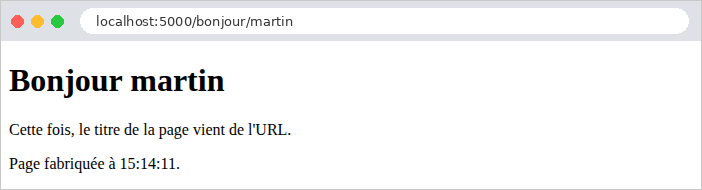
La réponse brute montre le travail de [Jinja2] : les balises [{{ }}] ont été remplacées par leurs valeurs, le commentaire a disparu (il reste une ligne vide à sa place, nous verrons à l'exemple suivant comment l'éviter).
| curl -i http://localhost:5000/
|
| HTTP/1.1 200 OK
Content-Type: text/html; charset=utf-8
Content-Length: 265
<!doctype html>
<html lang="fr">
<head>
<meta charset="utf-8">
<title>Ma première vue</title>
</head>
<body>
<h1>Ma première vue</h1>
<p>Cette page a été fabriquée par Jinja2, sur le serveur.</p>
<p>Page fabriquée à 15:30:49.</p>
</body>
</html>
|
La page d'erreur « maison », puis un nom contenant du HTML ([<b>martin], encodé dans l'URL) :
| curl -i http://localhost:5000/bonjour/inconnu
curl http://localhost:5000/bonjour/%3Cb%3Emartin
|
| HTTP/1.1 404 NOT FOUND
Content-Type: text/html; charset=utf-8
Content-Length: 168
<!doctype html>
<html lang="fr">
<head>
<meta charset="utf-8">
<title>Inconnu</title>
</head>
<body>
<h1>Personne ne s'appelle [inconnu] ici.</h1>
</body>
</html>
...
<title>Bonjour <b>martin</title>
...
<h1>Bonjour <b>martin</h1>
...
|
La balise [<b>] a été échappée, sans que l'action ni la vue aient rien eu à faire.
4.2. Exemple 14 : le langage Jinja2
Cet exemple réunit dans une seule vue les principales constructions de [Jinja2].
4.2.1. Le modèle et l'action
| # models/bases.py : le modèle de la vue de l'exemple 14
from dataclasses import dataclass
from decimal import Decimal
@dataclass
class Produit:
nom: str
prix: Decimal
en_stock: bool
@dataclass
class Adresse:
rue: str
ville: str
@dataclass
class BasesModele:
titre: str
nom: str
surnom: str | None
html: str
connecte: bool
devise: str
produits: list[Produit]
panier: list[Produit]
adresse: Adresse
|
Le modèle contient des valeurs de types variés : chaînes, [None], booléen, liste d'objets, liste vide, objet contenant un autre objet. Le type [Decimal], du module standard [decimal], représente exactement les nombres décimaux (contrairement au type [float], pour lequel [0.1 + 0.2] vaut [0.30000000000000004]) ; c'est le type à utiliser pour des montants.
| # controllers/bases.py : une vue qui utilise les principales constructions de Jinja2
from decimal import Decimal
from flask import Blueprint, render_template
from models.bases import Adresse, BasesModele, Produit
bases = Blueprint("bases", __name__)
@bases.get("/")
def index():
modele = BasesModele(
titre="Les bases de Jinja2",
nom="Martin",
surnom=None,
html="<b>ceci est du HTML</b>",
connecte=True,
devise="€",
produits=[
Produit("Clavier", Decimal("25"), True),
Produit("Souris", Decimal("12.5"), False),
Produit("Écran", Decimal("149"), True),
],
panier=[],
adresse=Adresse("12 rue des Lilas", "Angers"))
return render_template("bases/index.html", modele=modele)
|
L'action construit le modèle et le passe à la vue. [Decimal("12.5")] : un décimal se construit à partir d'une chaîne, pour ne pas passer par un [float] inexact.
4.2.2. La configuration : app.py
| # app.py : l'application de l'exemple 14
from flask import Flask
from controllers.bases import bases
def create_app():
app = Flask(__name__)
# les balises {% ... %} ne laissent pas de lignes vides dans la page produite :
# trim_blocks retire le saut de ligne qui suit une balise, lstrip_blocks les
# espaces qui la précèdent sur sa ligne
app.jinja_env.trim_blocks = True
app.jinja_env.lstrip_blocks = True
app.register_blueprint(bases)
return app
if __name__ == "__main__":
create_app().run(port=5000, debug=True)
|
- lignes 12-13 : [app.jinja_env] est l'environnement [Jinja2] de l'application, l'objet qui charge et exécute les vues. Par défaut, une balise [{% %}] seule sur sa ligne laisse dans la page produite les espaces qui la précèdent et le saut de ligne qui la suit : une boucle produirait des lignes vides en nombre. [trim_blocks] retire le saut de ligne qui suit une balise, [lstrip_blocks] les espaces qui la précèdent. Ces deux réglages ne changent rien à l'affichage de la page (le navigateur ignore ces blancs), mais rendent le HTML produit plus lisible. Tous les exemples suivants les activent.
4.2.3. La vue : templates/bases/index.html
| <!doctype html>
<html lang="fr">
<head>
<meta charset="utf-8">
<title>{{ modele.titre }}</title>
</head>
<body>
{# {% set %} : une variable de la vue ; les filtres (|) transforment une valeur #}
{% set total = modele.produits | sum(attribute="prix") %}
{% set nombre = modele.produits | length %}
<h1>{{ modele.titre }}</h1>
{# 1. afficher une valeur du modèle ; None s'affiche... "None" : le filtre
default(texte, true) remplace une valeur vide ou None. Ce commentaire
Jinja2 n'apparaît pas dans la page produite #}
<p>1. Nom : {{ modele.nom }} - surnom : [{{ modele.surnom }}] [{{ modele.surnom | default("", true) }}]</p>
{# 2. {{ }} échappe le HTML ; le filtre safe l'insère tel quel #}
<p>2a. {{ modele.html }}</p>
<p>2b. {{ modele.html | safe }}</p>
{# 3. une condition #}
{% if modele.connecte %}
<p>3. Vous êtes connecté.</p>
{% else %}
<p>3. Vous n'êtes pas connecté.</p>
{% endif %}
{# 4. une boucle : [loop] décrit l'état de la boucle #}
<p>4. Nos produits :</p>
<ul>
{% for produit in modele.produits %}
<li>n° {{ loop.index0 }} : {{ produit.nom }}, {{ produit.prix }} {{ modele.devise }}
{{ "(en stock)" if produit.en_stock else "(épuisé)" }}
{% if loop.first %}- le premier{% endif %}
{% if loop.last %}- le dernier, vu par {{ modele.nom }}{% endif %}
</li>
{% endfor %}
</ul>
{# 5. la liste vide : le bloc else d'une boucle for #}
<p>5. Votre panier :
{% for p in modele.panier %}<span>{{ p.nom }}</span>{% else %}il est vide.{% endfor %}
</p>
{# 6. des expressions calculées, les variables de set, et le filtre format #}
<p>6. {{ nombre }} produits, pour un total de {{ total }} {{ modele.devise }} ;
prix moyen : {{ "%.2f" | format(total / nombre) }} {{ modele.devise }}</p>
{# 7. un objet dans un objet, et une méthode Python (upper) #}
<p>7. Adresse : {{ modele.adresse.rue }}, {{ modele.adresse.ville.upper() }}</p>
<p>8. Une adresse électronique : contact@exemple.fr</p>
</body>
</html>
|
- lignes 9-10 : [{% set %}] crée une variable de la vue. Les filtres transforment une valeur : [valeur | filtre] ou [valeur | filtre(paramètres)]. Le filtre [sum(attribute="prix")] fait la somme des attributs [prix] des éléments d'une liste ; le filtre [length] rend la longueur d'une liste. [Jinja2] fournit une cinquantaine de filtres : [upper], [lower], [title], [trim], [join], [sort], [round], [default], [replace], [truncate]... ;
- ligne 15 : une valeur [None] s'affiche... [None]. Le filtre [default(valeur, true)] remplace une valeur « vide » ([None], chaîne vide, zéro) par la valeur indiquée ; sans le second paramètre [true], il ne remplacerait qu'une variable indéfinie ;
- lignes 17-18 : [{{ }}] échappe le HTML (2a) ; le filtre [safe] déclare au contraire que la valeur est du HTML sûr, à insérer tel quel (2b). [safe] est à réserver à du HTML produit par l'application elle-même, jamais à une saisie de l'utilisateur ;
- lignes 20-24 : une condition : [{% if %}], [{% elif %}], [{% else %}], [{% endif %}]. Contrairement à [Python], dont les blocs sont délimités par l'indentation, [Jinja2] ferme chaque bloc par une balise [end...] ;
- lignes 28-34 : une boucle [{% for %}] ... [{% endfor %}]. À l'intérieur, la variable spéciale [loop] décrit l'état de la boucle : [loop.index] (le numéro de l'itération, à partir de 1), [loop.index0] (à partir de 0), [loop.first], [loop.last] (vrais à la première et à la dernière itération), [loop.length] (le nombre d'éléments). Les variables extérieures à la boucle ([modele.nom]) restent accessibles ;
- ligne 30 : l'expression conditionnelle de [Python], [a if condition else b], est aussi celle de [Jinja2] ;
- ligne 38 : une boucle [for] peut avoir un bloc [{% else %}], exécuté si la liste est vide. C'est plus simple qu'un [if] qui testerait la longueur de la liste ;
- lignes 41-42 : des expressions calculées ([total / nombre]). Le filtre [format] applique un format à la façon de l'opérateur [%] de [Python] : ["%.2f"] affiche un nombre avec deux décimales. Nous verrons à l'exemple 16 une façon bien meilleure de mettre en forme des nombres et des montants ;
- ligne 44 : la notation pointée traverse les objets ([modele.adresse.ville]), et permet d'appeler leurs méthodes : [upper()] est une méthode des chaînes [Python] ;
- ligne 45 : une adresse électronique, écrite telle quelle. Le caractère [@], qui a un sens particulier dans d'autres moteurs de vues ([Razor]), n'en a aucun pour [Jinja2] : seules les balises [{{ }}], [{% %}] et [{# #}] sont interprétées.
4.2.4. Exécution
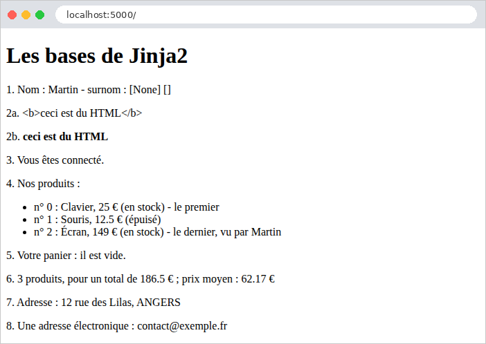
La page produite :
| <!doctype html>
<html lang="fr">
<head>
<meta charset="utf-8">
<title>Les bases de Jinja2</title>
</head>
<body>
<h1>Les bases de Jinja2</h1>
<p>1. Nom : Martin - surnom : [None] []</p>
<p>2a. <b>ceci est du HTML</b></p>
<p>2b. <b>ceci est du HTML</b></p>
<p>3. Vous êtes connecté.</p>
<p>4. Nos produits :</p>
<ul>
<li>n° 0 : Clavier, 25 €
(en stock)
- le premier </li>
<li>n° 1 : Souris, 12.5 €
(épuisé)
</li>
<li>n° 2 : Écran, 149 €
(en stock)
- le dernier, vu par Martin </li>
</ul>
<p>5. Votre panier :
il est vide. </p>
<p>6. 3 produits, pour un total de 186.5 € ;
prix moyen : 62.17 €</p>
<p>7. Adresse : 12 rue des Lilas, ANGERS</p>
<p>8. Une adresse électronique : contact@exemple.fr</p>
</body>
</html>
|
Les commentaires ont disparu, et les balises [{% %}] n'ont pas laissé de lignes vides. La mise en forme de certaines lignes (« [- le premier </li>] ») montre que [trim_blocks] et [lstrip_blocks] agissent aussi sur les balises placées en milieu de ligne ; c'est sans conséquence pour le navigateur.
4.3. Exemple 15 : gabarit, fragments, fichiers statiques
Les pages d'un site partagent le plus souvent une même structure : un entête, une barre de navigation, un pied de page, les mêmes feuilles de style. Plutôt que de répéter cette structure dans chaque vue, on l'écrit une fois, dans un gabarit (*layout*), que les pages étendent. Cet exemple utilise aussi [Bootstrap], le framework CSS le plus répandu, pour la présentation.
| 15-gabarit/
├── app.py
├── controllers/
│ └── pages.py
├── static/
│ └── css/
│ └── styles.css
└── templates/
├── fragments/
│ ├── carte.html
│ └── navbar.html
├── layout.html
└── pages/
├── accueil.html
├── brute.html
└── equipe.html
|
4.3.1. Les fichiers statiques
Une page HTML fait référence à d'autres fichiers : feuilles de style, scripts [JavaScript], images. Ces fichiers, que le serveur envoie tels quels, sont dits statiques. [Flask] sert automatiquement le contenu du dossier [static] de l'application sous l'URL [/static/...] : le fichier [static/css/styles.css] est disponible à l'URL [/static/css/styles.css].
| /* quelques réglages en plus de Bootstrap */
body {
background-color: #f5f7fa;
}
/* le pied de page du gabarit */
.pied {
margin-top: 2rem;
font-size: 0.85rem;
color: #6c757d;
}
/* les messages d'erreur, en bas de page, sur fond rose léger */
.zone-erreur {
margin-top: 1.5rem;
padding: 0.75rem 1rem;
background-color: #fdecef;
border: 1px solid #f5c2c7;
border-radius: 0.375rem;
color: #842029;
}
|
Quelques règles CSS en plus de [Bootstrap] : un fond gris clair, le style du pied de page, et celui d'une zone d'erreurs qui servira aux exemples suivants.
[Bootstrap], lui, est utilisé par les exemples 15 à 28. Plutôt que d'en mettre une copie dans le dossier [static] de chacun, les exemples le partagent : il est dans le dossier [exemples/commun/bootstrap]. Il faut donc indiquer à [Flask] qu'il doit servir aussi ce dossier. C'est le rôle des lignes suivantes de [app.py] :
| # app.py : l'application de l'exemple 15
from datetime import date
from pathlib import Path
from flask import Blueprint, Flask, request
from controllers.pages import pages
# Bootstrap, partagé par les exemples : le dossier exemples/commun/bootstrap,
# désigné à partir de l'emplacement de CE fichier (et non du dossier courant)
BOOTSTRAP = Path(__file__).resolve().parent.parent / "commun" / "bootstrap"
def create_app():
app = Flask(__name__)
app.jinja_env.trim_blocks = True
app.jinja_env.lstrip_blocks = True
# un blueprint sans route, qui ne sert que des fichiers statiques : le
# dossier BOOTSTRAP, sous l'URL /bootstrap/...
app.register_blueprint(Blueprint("bootstrap", __name__, static_folder=BOOTSTRAP,
static_url_path="/bootstrap"))
app.register_blueprint(pages)
# un "processeur de contexte" : exécuté avant la fabrication de CHAQUE vue,
# il ajoute ses variables au modèle de toutes les vues
@app.context_processor
def modele_commun():
return {"chemin": request.path, "annee": date.today().year}
return app
if __name__ == "__main__":
create_app().run(port=5000, debug=True)
|
- ligne 11 : le chemin du dossier [commun/bootstrap]. [Path], du module standard [pathlib], représente un chemin de fichier. [Path(__file__)] est le chemin du fichier [app.py] lui-même ([__file__] est une variable que [Python] définit dans chaque module) ; [resolve()] le rend absolu ; [parent] désigne le dossier qui le contient ([15-gabarit]), [parent.parent] le dossier au-dessus ([exemples]) ; l'opérateur [/] ajoute un élément au chemin. Désigner le dossier à partir de l'emplacement du fichier, et non du dossier courant, permet de lancer l'application depuis n'importe quel dossier ;
- lignes 20-21 : un blueprint peut avoir son propre dossier de fichiers statiques ([static_folder]), servi sous l'URL indiquée ([static_url_path]). Celui-ci n'a que cela : il n'a aucune route. Le fichier [commun/bootstrap/css/bootstrap.min.css] est ainsi servi à l'URL [/bootstrap/css/bootstrap.min.css] ;
- lignes 26-28 : un processeur de contexte est une fonction que [Flask] exécute avant la fabrication de chaque vue. Elle rend un dictionnaire, dont les couples s'ajoutent aux variables de la vue. Ici, [chemin] (le chemin de l'URL demandée) et [annee] (l'année courante) sont ainsi disponibles dans toutes les vues, sans que les actions aient à les fournir. Le gabarit s'en sert pour son pied de page.
4.3.2. Le gabarit : templates/layout.html
| <!doctype html>
{# le gabarit des pages : les pages l'ÉTENDENT, et remplissent ses blocs #}
<html lang="fr">
<head>
<meta charset="utf-8">
<meta name="viewport" content="width=device-width, initial-scale=1">
{# un bloc : un emplacement que la page peut remplir ; ici avec un contenu par défaut #}
<title>{% block titre %}Accueil{% endblock %} - Mon site</title>
{# url_for fabrique l'URL d'un fichier statique : /bootstrap/css/bootstrap.min.css #}
<link rel="stylesheet" href="{{ url_for('bootstrap.static', filename='css/bootstrap.min.css') }}">
<link rel="stylesheet" href="{{ url_for('static', filename='css/styles.css') }}">
</head>
<body>
<div class="container py-3">
{# insertion du fichier fragments/navbar.html #}
{% include "fragments/navbar.html" %}
<main>
{# le contenu de la page demandée par l'action est inséré ici #}
{% block contenu %}{% endblock %}
</main>
{# chemin, annee : ajoutés au modèle de toutes les vues (cf. app.py) #}
<footer class="pied">Page [{{ chemin }}] - © {{ annee }}</footer>
</div>
</body>
</html>
|
- ligne 6 : la balise [viewport] demande aux navigateurs des téléphones d'afficher la page à la largeur de l'écran, ce qu'attend [Bootstrap] ;
- ligne 8 : un bloc est un emplacement nommé, que les pages qui étendent le gabarit peuvent remplir. Le contenu écrit entre [{% block titre %}] et [{% endblock %}] est le contenu par défaut du bloc, utilisé par une page qui ne le redéfinit pas ;
- lignes 10-11 : [url_for], que nous connaissons pour les actions (exemple 04), fabrique aussi l'URL d'un fichier statique : [static] désigne le dossier statique de l'application, [bootstrap.static] celui du blueprint [bootstrap] ; [filename] est le chemin du fichier dans ce dossier. [url_for] est disponible dans toutes les vues. Écrire l'URL à la main ([/static/css/styles.css]) fonctionnerait aussi, mais [url_for] s'adapte si l'on déplace le dossier, ou si l'application est installée sous un préfixe d'URL ;
- ligne 16 : [{% include %}] insère le contenu d'une autre vue, ici la barre de navigation. La vue incluse voit les variables de la vue qui l'inclut ;
- ligne 19 : le bloc que chaque page remplit avec son propre contenu. Il est vide par défaut ;
- ligne 22 : le pied de page utilise les deux variables du processeur de contexte.
La classe [container] de [Bootstrap] centre le contenu et limite sa largeur ; [py-3] ajoute une marge verticale intérieure (*padding*) : [Bootstrap] fournit des centaines de classes de ce genre, qu'on combine dans l'attribut [class].
4.3.3. La barre de navigation : templates/fragments/navbar.html
| {# un fragment : un morceau de page, inséré par {% include %} #}
<nav class="navbar navbar-expand bg-light rounded mb-3 px-3">
<span class="navbar-brand">Mon site</span>
<div class="navbar-nav">
<a class="nav-link" href="/">Accueil</a>
<a class="nav-link" href="/equipe">Équipe</a>
<a class="nav-link" href="/brute">Page sans gabarit</a>
</div>
</nav>
|
Un fragment : un morceau de page, qui n'a pas de sens seul. Les classes [navbar], [navbar-brand], [nav-link] sont celles de la barre de navigation de [Bootstrap].
4.3.4. Une macro : templates/fragments/carte.html
| {# une MACRO : un morceau de page qui a des paramètres, comme une fonction #}
{% macro carte(nom, fonction) %}
<div class="card">
<div class="card-body">
<h5 class="card-title">{{ nom }}</h5>
<p class="card-text">{{ fonction }}</p>
</div>
</div>
{% endmacro %}
|
- lignes 2-9 : une macro est un morceau de page qui a des paramètres : c'est la fonction de [Jinja2]. Son appel, [{{ carte("nom", "fonction") }}], insère le morceau de page produit avec ces valeurs. Les paramètres peuvent avoir une valeur par défaut, comme en [Python] : [{% macro carte(nom, fonction="") %}]. La carte ([card]) est un composant de [Bootstrap].
4.3.5. Les pages
| {# cette page ÉTEND le gabarit : elle ne fournit que le contenu de ses blocs #}
{% extends "layout.html" %}
{# la macro [carte] du fichier fragments/carte.html #}
{% from "fragments/carte.html" import carte %}
{% block contenu %}
<h1>Bienvenue</h1>
<p>Cette page ne contient que son propre contenu : l'entête, la barre de
navigation et le pied de page viennent du gabarit <code>layout.html</code>.</p>
{# l'appel de la macro, avec deux paramètres écrits sur place #}
{{ carte("Une macro", "appelée avec des paramètres écrits sur place") }}
{% endblock %}
|
- ligne 2 : la page étend le gabarit : [Jinja2] fabrique la page du gabarit, en remplaçant ses blocs par ceux que la page redéfinit. [{% extends %}] doit être la première balise de la vue. Dans une vue qui étend un gabarit, le texte écrit en dehors des blocs n'apparaît pas dans la page produite (les instructions [{% set %}] y gardent en revanche leur effet, nous le verrons au chapitre sur l'internationalisation) ;
- ligne 4 : l'importation de la macro [carte], définie dans un autre fichier ;
- ligne 6 : le bloc [contenu] du gabarit, redéfini. La page ne redéfinit pas le bloc [titre] : il garde son contenu par défaut, « Accueil » ;
- ligne 11 : l'appel de la macro.
| {% extends "layout.html" %}
{% from "fragments/carte.html" import carte %}
{% block titre %}Notre équipe{% endblock %}
{% block contenu %}
<h1>Notre équipe</h1>
<div class="row g-3">
{% for membre in membres %}
<div class="col-md-4">
{# la macro reçoit le nom et la fonction du membre courant #}
{{ carte(membre.nom, membre.fonction) }}
</div>
{% endfor %}
</div>
{% endblock %}
|
- ligne 4 : cette page redéfinit aussi le titre ;
- lignes 9-14 : une carte par membre de l'équipe, dans une grille de [Bootstrap] ([row], [col-md-4] : trois colonnes sur un écran moyen ou large, une seule sur un téléphone).
Le contrôleur ne présente pas de nouveauté :
| # controllers/pages.py : trois pages
from dataclasses import dataclass
from flask import Blueprint, render_template
pages = Blueprint("pages", __name__)
# un membre de l'équipe
@dataclass
class Membre:
nom: str
fonction: str
@pages.get("/")
def accueil():
return render_template("pages/accueil.html")
@pages.get("/equipe")
def equipe():
membres = [
Membre("Marie Pélissier", "Directrice"),
Membre("Jacques Bromard", "Développeur"),
Membre("Philippe Jandot", "Graphiste"),
]
return render_template("pages/equipe.html", membres=membres)
@pages.get("/brute")
def brute():
return render_template("pages/brute.html")
|
La troisième page, enfin, n'utilise pas le gabarit :
| <!doctype html>
{# cette vue n'utilise pas le gabarit : c'est une page complète #}
<html lang="fr">
<head>
<meta charset="utf-8">
<title>Page brute</title>
</head>
<body>
<p>Cette page n'utilise pas le gabarit : ni Bootstrap, ni barre de navigation.</p>
<p><a href="/">Retour à l'accueil</a></p>
</body>
</html>
|
4.3.6. Exécution


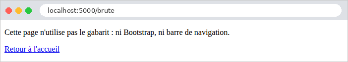
La page de l'équipe, telle que la reçoit le navigateur :
| curl http://localhost:5000/equipe
|
| <!doctype html>
<html lang="fr">
<head>
<meta charset="utf-8">
<meta name="viewport" content="width=device-width, initial-scale=1">
<title>Notre équipe - Mon site</title>
<link rel="stylesheet" href="/bootstrap/css/bootstrap.min.css">
<link rel="stylesheet" href="/static/css/styles.css">
</head>
<body>
<div class="container py-3">
<nav class="navbar navbar-expand bg-light rounded mb-3 px-3">
<span class="navbar-brand">Mon site</span>
<div class="navbar-nav">
<a class="nav-link" href="/">Accueil</a>
<a class="nav-link" href="/equipe">Équipe</a>
<a class="nav-link" href="/brute">Page sans gabarit</a>
</div>
</nav> <main>
<h1>Notre équipe</h1>
<div class="row g-3">
<div class="col-md-4">
<div class="card">
<div class="card-body">
<h5 class="card-title">Marie Pélissier</h5>
<p class="card-text">Directrice</p>
</div>
</div>
</div>
...
</div>
</main>
<footer class="pied">Page [/equipe] - © 2026</footer>
</div>
</body>
</html>
|
Le navigateur a reçu une page complète : l'assemblage du gabarit, du fragment, de la page et des macros a été fait sur le serveur. Les URL des feuilles de style ont été calculées par [url_for]. On peut vérifier que le fichier de [Bootstrap] est bien servi (l'option [-I] de [curl] n'affiche que les entêtes de la réponse) :
| curl -I http://localhost:5000/bootstrap/css/bootstrap.min.css
|
| HTTP/1.1 200 OK
Content-Disposition: inline; filename=bootstrap.min.css
Content-Type: text/css; charset=utf-8
...
|
4.4. Exemple 16 : les helpers
Une vue a souvent besoin de mettre en forme des valeurs : un montant avec sa devise, une date en toutes lettres, un texte en majuscules. Ce code n'a pas sa place dans l'action (qui ne s'occupe pas de présentation), et serait lourd à écrire dans la vue. On l'écrit en [Python], dans des fonctions que les vues appellent : ce sont les helpers (aides) de la vue. [Jinja2] en connaît trois sortes : les filtres ([{{ prix | monnaie }}]), les fonctions globales ([{{ majuscules(nom) }}]) et les macros, déjà rencontrées.
| # aides/formats.py : des fonctions appelées par les vues
from datetime import date
from decimal import Decimal
from babel.dates import format_date
from babel.numbers import format_currency
from flask import g
# "clavier" -> "CLAVIER"
def majuscules(texte: str | None) -> str:
return "" if texte is None else texte.upper()
# un montant dans une devise, au format de la langue de la requête (g.locale,
# cf. app.py) : 1149.9 -> "1 149,90 €" en français, "€1,149.90" en anglais.
# La bibliothèque Babel connaît les conventions de chaque pays
def monnaie(montant: Decimal, devise: str = "EUR") -> str:
return format_currency(montant, devise, locale=g.locale)
# une date en toutes lettres, dans la langue de la requête : "samedi 26 septembre 2026"
def date_longue(jour: date) -> str:
return format_date(jour, format="full", locale=g.locale)
|
- lignes 11-12 : une fonction ordinaire, qui accepte [None] ;
- lignes 18-19 : la mise en forme d'un montant. Elle dépend de la langue : en français, [1 149,90 €] (espace pour séparer les milliers, virgule décimale, symbole après le montant) ; en anglais, [€1,149.90]. La bibliothèque [Babel] connaît les conventions de tous les pays (elle utilise les données du projet *CLDR* d'Unicode) : [format_currency(montant, devise, locale=...)] met en forme un montant, la devise étant désignée par son code international ([EUR], [USD]). La locale ([fr_FR], [en_US]) désigne une langue et un pays. Ici, elle est lue dans [g.locale], que nous allons voir ;
- lignes 23-24 : [format_date] met en forme une date ; le format [full] l'écrit en toutes lettres, avec le jour de la semaine.
4.4.2. La configuration : app.py
| # app.py : l'application de l'exemple 16
from pathlib import Path
from flask import Blueprint, Flask, g, request
from aides import formats
from controllers.pages import pages
BOOTSTRAP = Path(__file__).resolve().parent.parent / "commun" / "bootstrap"
def create_app():
app = Flask(__name__)
app.jinja_env.trim_blocks = True
app.jinja_env.lstrip_blocks = True
app.register_blueprint(Blueprint("bootstrap", __name__, static_folder=BOOTSTRAP,
static_url_path="/bootstrap"))
app.register_blueprint(pages)
# la langue de formatage de chaque requête : le paramètre ?lang=en de l'URL,
# le français sinon. before_request : une fonction exécutée avant CHAQUE
# action ; [g] : un objet qui vit le temps d'une requête
@app.before_request
def fixer_langue():
g.locale = "en_US" if request.args.get("lang") == "en" else "fr_FR"
# des FILTRES "maison" : {{ prix | monnaie }}, {{ jour | date_longue }}
app.add_template_filter(formats.monnaie)
app.add_template_filter(formats.date_longue)
# une FONCTION globale, appelable dans toutes les vues : {{ majuscules(nom) }}
app.add_template_global(formats.majuscules)
return app
if __name__ == "__main__":
create_app().run(port=5000, debug=True)
|
- lignes 23-25 : la langue de mise en forme dépend de la requête : le paramètre [?lang=en] de l'URL choisit l'anglais, le français est la langue par défaut. [@app.before_request] enregistre une fonction que [Flask] exécute avant chaque action (le chapitre sur le cycle de vie d'une requête détaillera ces « crochets »). Elle range la locale dans [g], un objet de [Flask] qui, comme [request], est propre à la requête en cours : on peut y ranger ce qu'on veut ([g.locale = ...]), c'est oublié à la fin de la requête. C'est le moyen de partager une information entre les différentes fonctions qui traitent une même requête, sans la passer en paramètre de l'une à l'autre. Le chapitre sur les portées des données y reviendra ;
- lignes 28-29 : l'enregistrement de deux fonctions comme filtres [Jinja2], sous leur nom. Un filtre reçoit en premier paramètre la valeur placée avant le [|] ; les paramètres suivants sont ceux du filtre : [{{ prix | monnaie("USD") }}] appelle [monnaie(prix, "USD")] ;
- ligne 31 : l'enregistrement d'une fonction comme fonction globale des vues.
Le décorateur [@app.template_filter()] (placé sur la fonction elle-même) est une autre façon d'enregistrer un filtre. L'appel de [add_template_filter] dans [app.py] a l'avantage de laisser le module [aides/formats.py] indépendant de [Flask] (à [g] près).
4.4.3. Le contrôleur : controllers/pages.py
| # controllers/pages.py : deux pages
from dataclasses import dataclass
from datetime import date
from decimal import Decimal
from flask import Blueprint, render_template
pages = Blueprint("pages", __name__)
@dataclass
class Produit:
nom: str
prix: Decimal
stock: int
@pages.get("/")
def accueil():
return render_template("pages/accueil.html", aujourdhui=date.today())
@pages.get("/produits")
def produits():
return render_template("pages/produits.html", produits=[
Produit("clavier", Decimal("25"), 12),
Produit("souris", Decimal("12.5"), 0),
Produit("écran", Decimal("1149.9"), 3),
])
|
Les actions transmettent aux vues des valeurs brutes : une [date], des [Decimal]. La mise en forme est l'affaire des vues.
4.4.4. Les vues
| {# une macro : un lien de la barre de navigation, qui reçoit la classe [active]
si la page courante est sous le chemin [href]. [request] : la requête en
cours, que Flask met à la disposition de toutes les vues #}
{% macro lien(href, texte) %}
{% set actif = request.path == "/" if href == "/" else request.path.startswith(href) %}
<a class="nav-link{{ ' active' if actif }}" href="{{ href }}">{{ texte }}</a>
{% endmacro %}
<nav class="navbar navbar-expand bg-light rounded mb-3 px-3">
<span class="navbar-brand">Helpers</span>
<div class="navbar-nav">
{# 1. une condition écrite dans la vue #}
<a class="nav-link{% if request.path == '/' %} active{% endif %}" href="/">Accueil</a>
{# 2. la macro [lien] #}
{{ lien("/produits", "Produits") }}
{# 3. url_for fabrique l'URL d'une action ; un paramètre qui n'est pas une
variable du chemin s'ajoute à la fin de l'URL : /produits?lang=en #}
<a class="nav-link" href="{{ url_for('pages.produits', lang='en') }}">Products (en)</a>
</div>
</nav>
|
- lignes 4-7 : une macro qui fabrique un lien de la barre de navigation. Le lien de la page courante reçoit la classe [active] de [Bootstrap], qui le met en évidence. La variable [request] (la requête en cours) est disponible dans toutes les vues, comme [g], [url_for] et [session] (chapitre sur les portées). L'expression conditionnelle de la ligne 5 traite à part la page d'accueil, dont le chemin [/] est le début de tous les autres ;
- ligne 6 : une expression conditionnelle sans [else] rend une chaîne vide si la condition est fausse ;
- ligne 13 : la même chose, écrite directement dans la vue, sans macro. La macro évite de répéter la condition pour chaque lien ;
- ligne 18 : un paramètre de [url_for] qui n'est pas une variable du chemin de la route est ajouté à l'URL, comme paramètre : [/produits?lang=en].
| {# un badge Bootstrap : vert si le produit est en stock, rouge sinon #}
{% macro badge(stock) %}
<span class="badge {{ 'text-bg-success' if stock > 0 else 'text-bg-danger' }}">
{{- stock ~ " en stock" if stock > 0 else "épuisé" -}}
</span>
{% endmacro %}
|
- ligne 3 : un badge de [Bootstrap], vert ([text-bg-success]) ou rouge ([text-bg-danger]) selon le stock ;
- ligne 4 : l'opérateur [~] de [Jinja2] concatène deux valeurs en les convertissant en chaînes ([+] refuserait d'ajouter un entier et une chaîne). Les tirets de [{{-] et [-}}] suppriment les blancs (espaces et sauts de ligne) qui précèdent ou suivent la balise : le texte du badge est ainsi collé à ses balises.
| {% extends "layout.html" %}
{% block titre %}Accueil{% endblock %}
{% block contenu %}
<h1>Accueil</h1>
{# le filtre "maison" date_longue #}
<p>Nous sommes le {{ aujourdhui | date_longue }}.</p>
{# g : l'objet de la requête en cours, lui aussi accessible dans les vues #}
<p>Langue de formatage : {{ g.locale }}
(<a href="/?lang=en">en anglais</a>, <a href="/">en français</a>)</p>
{% endblock %}
|
- ligne 7 : l'appel du filtre « maison » ;
- ligne 9 : l'objet [g] est accessible dans les vues.
| {% extends "layout.html" %}
{% from "fragments/badge.html" import badge %}
{% block titre %}Produits{% endblock %}
{% block contenu %}
<h1>Produits</h1>
<table class="table table-sm w-auto">
<thead><tr><th>Produit</th><th>Prix</th><th>Prix en dollars</th><th>Stock</th></tr></thead>
<tbody>
{% for produit in produits %}
<tr>
{# une fonction globale, puis un filtre, sans puis avec paramètre #}
<td>{{ majuscules(produit.nom) }}</td>
<td>{{ produit.prix | monnaie }}</td>
<td>{{ produit.prix | monnaie("USD") }}</td>
{# la macro [badge] fabrique le HTML du badge #}
<td>{{ badge(produit.stock) }}</td>
</tr>
{% endfor %}
</tbody>
</table>
{% endblock %}
|
- ligne 13 : l'appel de la fonction globale ;
- lignes 14-15 : le filtre [monnaie], avec sa devise par défaut, puis avec un paramètre ;
- ligne 17 : l'appel de la macro importée.
Le gabarit [layout.html] est une version simplifiée de celui de l'exemple 15.
4.4.5. Exécution
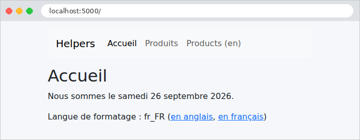
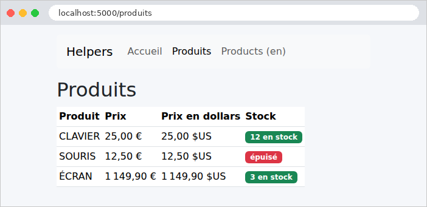
La même page, avec le paramètre [?lang=en]. Seule la mise en forme des nombres change : les textes, eux, sont écrits en dur dans les vues. Le chapitre sur l'internationalisation traduira aussi les textes.

Un extrait du HTML produit :
| curl "http://localhost:5000/produits?lang=en"
|
| ...
<tr>
<td>CLAVIER</td>
<td>€25.00</td>
<td>$25.00</td>
<td><span class="badge text-bg-success">12 en stock</span>
</td>
</tr>
...
|
Un formulaire HTML envoie ses champs au serveur, de l'une de deux façons, selon son attribut [method] :
- [method="get"] : les champs sont ajoutés à l'URL, comme paramètres ([/recherche?motCle=le&genre=roman]). C'est la méthode d'un formulaire qui consulte : une recherche, un filtre. L'URL des résultats peut être mise en favori, partagée, rechargée sans risque ;
- [method="post"] : les champs voyagent dans le corps de la requête (cf. exemple 11). C'est la méthode d'un formulaire qui modifie des données : une inscription, un ajout, une suppression.
Ce premier formulaire est une recherche de livres.
4.5.1. Le modèle : models/livres.py
| # models/livres.py : un livre, et le modèle de la vue
from dataclasses import dataclass
@dataclass(frozen=True)
class Livre:
titre: str
auteur: str
genre: str
# le modèle de la vue : la saisie (pour la réafficher), les genres, les résultats
@dataclass
class RechercheModele:
mot_cle: str
genre: str
genres: list[str]
resultats: list[Livre]
|
- ligne 5 : [frozen=True] rend les objets [Livre] immuables : une fois créés, leurs attributs ne peuvent plus être modifiés. C'est une bonne habitude pour des données partagées par toutes les requêtes, comme la liste des livres ;
- lignes 14-18 : le modèle de la vue contient la saisie de l'utilisateur, pour que le formulaire la réaffiche, la liste des genres proposés, et les résultats.
4.5.2. Le contrôleur : controllers/livres.py
| # controllers/livres.py : un formulaire de recherche, envoyé par GET
from flask import Blueprint, render_template, request
from models.livres import Livre, RechercheModele
livres = Blueprint("livres", __name__)
LIVRES = (
Livre("Le Rouge et le Noir", "Stendhal", "roman"),
Livre("Les Fleurs du mal", "Baudelaire", "poésie"),
Livre("Madame Bovary", "Flaubert", "roman"),
Livre("Alcools", "Apollinaire", "poésie"),
Livre("Le Cid", "Corneille", "théâtre"),
)
GENRES = ["roman", "poésie", "théâtre"]
# GET / et GET /recherche?motCle=...&genre=... : le formulaire ET ses résultats.
# Deux décorateurs : deux routes pour la même action
@livres.get("/")
@livres.get("/recherche")
def recherche():
mot_cle = request.args.get("motCle", "")
genre = request.args.get("genre", "")
mot = mot_cle.strip().lower()
resultats = [livre for livre in LIVRES
if (not mot or mot in livre.titre.lower() or mot in livre.auteur.lower())
and (not genre or livre.genre == genre)]
return render_template("livres/recherche.html",
modele=RechercheModele(mot_cle, genre, GENRES, resultats))
|
- lignes 8-16 : les données, écrites dans le code pour l'exemple. [LIVRES] est un tuple (entre parenthèses), une séquence non modifiable. Les noms en majuscules signalent, par convention, des constantes ;
- lignes 21-22 : deux décorateurs de route sur la même action : elle répond aux deux URL. À la première visite ([/]), il n'y a pas de paramètres : tous les livres sont affichés ;
- lignes 24-25 : les champs du formulaire sont lus comme des paramètres de l'URL (exemple 07). Le second paramètre de [get] est la valeur par défaut ;
- lignes 27-29 : le filtrage, par une liste en compréhension avec une condition ([if]) : un livre est retenu si le mot-clé est vide ou figure dans son titre ou son auteur (en minuscules des deux côtés), et si le genre est vide ou est le sien ;
- ligne 31 : le modèle de la vue.
4.5.3. La vue : templates/livres/recherche.html
| {% extends "layout.html" %}
{% block contenu %}
<h1 class="h3">Recherche de livres</h1>
{# method="get" : les champs sont envoyés dans l'URL (?motCle=...&genre=...) #}
<form method="get" action="/recherche" class="row g-2 align-items-end mb-3">
<div class="col-auto">
<label class="form-label" for="motCle">Titre ou auteur</label>
{# value : le champ réaffiche ce qui a été saisi (échappé par {{ }}) #}
<input class="form-control" id="motCle" name="motCle" value="{{ modele.mot_cle }}">
</div>
<div class="col-auto">
<label class="form-label" for="genre">Genre</label>
<select class="form-select" id="genre" name="genre">
<option value="">(tous)</option>
{% for genre in modele.genres %}
{# selected : un attribut booléen, écrit si la condition est vraie, omis sinon #}
<option value="{{ genre }}"{{ " selected" if genre == modele.genre }}>{{ genre }}</option>
{% endfor %}
</select>
</div>
<div class="col-auto">
<button class="btn btn-primary" type="submit">Rechercher</button>
</div>
</form>
<p>{{ modele.resultats | length }} livre(s) trouvé(s).</p>
<ul>
{% for livre in modele.resultats %}
<li><i>{{ livre.titre }}</i>, {{ livre.auteur }} ({{ livre.genre }})</li>
{% endfor %}
</ul>
{% endblock %}
|
- ligne 6 : la balise [<form>]. L'attribut [action] est l'URL à laquelle le formulaire est envoyé ; [method="get"] place les champs dans l'URL. Les classes de [Bootstrap] disposent les champs sur une ligne ;
- ligne 8 : un libellé. Son attribut [for] désigne l'identifiant ([id]) du champ qu'il décrit : un clic sur le libellé place le curseur dans le champ, et les lecteurs d'écran lisent le libellé avec le champ ;
- ligne 10 : une zone de saisie. Son attribut [name] est le nom du paramètre envoyé au serveur : c'est le lien entre le formulaire et l'action ([request.args.get("motCle")]). L'attribut [value] est la valeur affichée : la saisie précédente, réaffichée (et échappée par [{{ }}], ce qui est indispensable dans un attribut : une saisie contenant un guillemet ["] fermerait sinon l'attribut) ;
- lignes 14-20 : une liste déroulante. Chaque [<option>] a une valeur ([value]), envoyée au serveur, et un texte, affiché. La première option, de valeur vide, signifie « tous les genres » ;
- ligne 18 : l'option choisie à la requête précédente reçoit l'attribut [selected]. C'est un attribut booléen : sa présence suffit, il n'a pas de valeur. L'expression conditionnelle sans [else] l'écrit ou non ;
- ligne 23 : le bouton d'envoi ([type="submit"]) ;
- ligne 26 : le nombre de résultats.
4.5.4. Exécution

Saisissons [le] et choisissons le genre [roman] :

L'URL de la page des résultats contient les champs du formulaire : [/recherche?motCle=le&genre=roman]. La réponse, à partir du formulaire :
| curl "http://localhost:5000/recherche?motCle=le&genre=roman"
|
| ...
<form method="get" action="/recherche" class="row g-2 align-items-end mb-3">
<div class="col-auto">
<label class="form-label" for="motCle">Titre ou auteur</label>
<input class="form-control" id="motCle" name="motCle" value="le">
</div>
<div class="col-auto">
<label class="form-label" for="genre">Genre</label>
<select class="form-select" id="genre" name="genre">
<option value="">(tous)</option>
<option value="roman" selected>roman</option>
<option value="poésie">poésie</option>
<option value="théâtre">théâtre</option>
</select>
</div>
...
</form>
<p>1 livre(s) trouvé(s).</p>
<ul>
<li><i>Le Rouge et le Noir</i>, Stendhal (roman)</li>
</ul>
...
|
« Madame Bovary » n'est pas retenu : « le » ne figure ni dans son titre ni dans le nom de son auteur.
Écrire à la main le HTML de chaque champ, réafficher sa valeur, cocher les bonnes cases, sélectionner les bonnes options : c'est un travail répétitif, et sujet aux erreurs. La bibliothèque [WTForms] le fait à notre place. Un formulaire y est décrit par une classe, dont chaque attribut est un champ ; chaque champ sait :
- se lier à la requête : lire sa valeur dans les données envoyées, et la convertir dans son type ;
- se valider, d'après la liste de ses validateurs (exemple 19) ;
- s'afficher en HTML, avec sa valeur courante.
L'extension [Flask-WTF] intègre [WTForms] à [Flask] : ses formulaires lisent eux-mêmes la requête en cours, et ils sont protégés contre les attaques CSRF (nous y venons). Cet exemple présente tous les types de champs d'un formulaire HTML.
4.6.1. Le service des listes : services/listes.py
| # services/listes.py : les listes proposées par le formulaire. Dans une vraie
# application, elles viendraient d'une base de données : on les lirait UNE fois,
# au démarrage, puisqu'elles sont les mêmes pour tous les utilisateurs.
from flask import current_app
class ListesService:
# chaque liste : des couples (valeur envoyée, texte affiché)
def titres(self) -> list[tuple[str, str]]:
return [(t, t) for t in ("Mr", "Mme", "Melle")]
def pays(self) -> list[tuple[str, str]]:
return [("fr", "France"), ("be", "Belgique"), ("ch", "Suisse"), ("ca", "Canada")]
def loisirs(self) -> list[tuple[str, str]]:
return [(l, l) for l in ("lecture", "musique", "sport", "cinéma")]
def langues(self) -> list[tuple[str, str]]:
return [(l, l) for l in ("français", "anglais", "espagnol", "allemand")]
def listes_service() -> ListesService:
return current_app.extensions["listes"]
|
Les listes de choix du formulaire (titres, pays, loisirs, langues) sont fournies par un service, sur le modèle de l'exemple 06 : dans une vraie application, elles viendraient d'une base de données. Chaque choix est un couple [(valeur, texte)] : la valeur envoyée au serveur, et le texte affiché. [[(t, t) for t in (...)]] fabrique des couples dont les deux éléments sont identiques. La fonction [listes_service] rend l'objet unique, rangé dans [app.extensions] par [app.py] :
| # app.py : l'application de l'exemple 18
from pathlib import Path
from flask import Blueprint, Flask
from controllers.formulaire import formulaire
from services.listes import ListesService
# Bootstrap, partagé par les exemples (cf. exemple 15)
BOOTSTRAP = Path(__file__).resolve().parent.parent / "commun" / "bootstrap"
def create_app():
app = Flask(__name__)
app.jinja_env.trim_blocks = True
app.jinja_env.lstrip_blocks = True
# la clé secrète de l'application : elle signe le jeton anti-CSRF des formulaires
# (cf. models/saisie.py). En production, une longue chaîne aléatoire, gardée secrète
app.config["SECRET_KEY"] = "une-cle-secrete-pour-l-exemple-18"
# le service des listes : un seul objet, partagé (cf. exemple 06)
app.extensions["listes"] = ListesService()
app.register_blueprint(Blueprint("bootstrap", __name__, static_folder=BOOTSTRAP,
static_url_path="/bootstrap"))
app.register_blueprint(formulaire)
return app
if __name__ == "__main__":
create_app().run(port=5000, debug=True)
|
- ligne 19 : [app.config] est la configuration de l'application, un dictionnaire. La clé [SECRET_KEY] est la clé secrète de l'application : [Flask] et ses extensions s'en servent pour signer des données confiées au navigateur, c'est-à-dire leur ajouter une empreinte que seul le détenteur de la clé peut calculer. Toute modification des données par le navigateur est ainsi détectée. [Flask-WTF] en a besoin pour ses jetons anti-CSRF ; nous la retrouverons pour le cookie de session (exemple 20). En production, c'est une longue chaîne aléatoire, qui ne doit jamais apparaître dans le code source (le chapitre sur l'authentification la lira dans une variable d'environnement) ;
- ligne 21 : le service unique, partagé par toutes les requêtes.
| # models/saisie.py : le formulaire, décrit par une classe WTForms. Chaque champ
# sait se lire dans la requête (liaison) et s'afficher en HTML (rendu)
from flask_wtf import FlaskForm
from wtforms import (DateField, HiddenField, PasswordField, RadioField,
SelectField, SelectMultipleField, StringField, TextAreaField)
from wtforms.validators import Optional
from wtforms.widgets import CheckboxInput, ListWidget
from services.listes import listes_service
# des cases à cocher : une liste à choix multiple (SelectMultipleField),
# dessinée comme une liste de cases (widgets) au lieu d'une liste déroulante
class CasesACocher(SelectMultipleField):
widget = ListWidget(prefix_label=False)
option_widget = CheckboxInput()
# FlaskForm : un formulaire WTForms adapté à Flask ; il lit lui-même les champs
# de la requête POST en cours, et contient un champ caché [csrf_token]
class SaisieForm(FlaskForm):
jeton = HiddenField()
titre = RadioField("Titre")
nom = StringField("Nom")
mot_de_passe = PasswordField("Mot de passe")
# un champ <input type="date"> échange ses valeurs au format aaaa-mm-jj ;
# Optional : le champ peut rester vide
naissance = DateField("Date de naissance", validators=[Optional()])
loisirs = CasesACocher("Loisirs")
pays = SelectField("Pays")
langues = SelectMultipleField("Langues parlées")
commentaire = TextAreaField("Commentaire")
# les listes de choix, fournies par le service à chaque création du formulaire
def __init__(self, *args, **kwargs):
super().__init__(*args, **kwargs)
listes = listes_service()
self.titre.choices = listes.titres()
self.pays.choices = listes.pays()
self.loisirs.choices = listes.loisirs()
self.langues.choices = listes.langues()
|
- lignes 14-16 : [WTForms] n'a pas de champ « cases à cocher ». Mais un groupe de cases de même nom est, pour le serveur, une liste à choix multiple : il envoie zéro, une ou plusieurs valeurs. On crée donc une classe dérivée de [SelectMultipleField] qui change seulement sa présentation : le widget d'un champ est l'objet qui produit son HTML ; [ListWidget] dessine une liste d'options, et chaque option est dessinée par [CheckboxInput], une case à cocher ;
- ligne 21 : le formulaire hérite de [FlaskForm], la classe de base de [Flask-WTF] ;
- lignes 22-32 : les champs. Le premier paramètre est le libellé. Chaque classe de champ correspond à un élément HTML :
Champ WTForms | Élément HTML produit |
[StringField] | [<input type="text">] |
[PasswordField] | [<input type="password">], jamais pré-rempli |
[HiddenField] | [<input type="hidden">], un champ invisible |
[DateField] | [<input type="date">], dont la valeur est convertie en [date] |
[IntegerField], [EmailField] | [<input type="number">], [<input type="email">] (exemple 19) |
[RadioField] | un groupe de boutons radio : une seule valeur |
[SelectField] | une liste déroulante [<select>] : une seule valeur |
[SelectMultipleField] | une liste [<select multiple>] : plusieurs valeurs |
[TextAreaField] | une zone de texte [<textarea>], sur plusieurs lignes |
[BooleanField] | une case à cocher seule, convertie en booléen |
- ligne 28 : le validateur [Optional()] autorise le champ à rester vide (sinon, la conversion d'une chaîne vide en date échouerait). Un champ [<input type="date">] échange ses valeurs avec le serveur au format [aaaa-mm-jj], quel que soit le format dans lequel le navigateur l'affiche ;
- lignes 35-41 : les champs à choix ont besoin de leur liste de choix ([choices]). Elle est fournie à chaque création du formulaire, dans le constructeur, la méthode [__init__]. Il appelle d'abord le constructeur de la classe parente ([super().__init__(...)]), en lui transmettant tous ses paramètres, puis complète les champs. Un champ [titre] déclaré au niveau de la classe devient, dans l'objet, un champ lié ([self.titre]), propre à ce formulaire.
| # controllers/formulaire.py : un formulaire qui utilise tous les types de champs
from flask import Blueprint, render_template, request
from models.saisie import SaisieForm
formulaire = Blueprint("formulaire", __name__, url_prefix="/formulaire")
# GET : le formulaire, avec des valeurs initiales (paramètres nommés : un par champ)
@formulaire.get("")
def afficher():
form = SaisieForm(titre="Mme", pays="fr", langues=["français"], jeton="A7X2")
return render_template("formulaire/formulaire.html", form=form)
# POST : SaisieForm() lit les champs envoyés ; le formulaire les réaffiche
@formulaire.post("")
def traiter():
form = SaisieForm()
# validate : vérifie le jeton anti-CSRF, et les contraintes des champs
valide = form.validate()
# ce que le navigateur a réellement envoyé, paramètre par paramètre
recu = "\n".join(f"{nom} = [{', '.join(valeurs)}]"
for nom, valeurs in request.form.lists())
return render_template("formulaire/formulaire.html", form=form, recu=recu,
valide=valide)
|
- ligne 12 : un formulaire créé pendant une requête GET ne lit rien : ses champs prennent les valeurs passées au constructeur (paramètres nommés, un par champ), ou restent vides. Ce sont les valeurs initiales du formulaire ;
- ligne 13 : le formulaire lui-même est passé à la vue, qui le dessinera ;
- ligne 19 : pendant une requête POST, [FlaskForm] lit lui-même les champs envoyés ([request.form]) : chaque champ prend la valeur reçue, convertie dans son type ;
- ligne 21 : [validate()] exécute les validateurs de chaque champ, et rend [True] si tous sont satisfaits. Les champs à choix vérifient d'office que la valeur reçue fait partie de leurs choix : un utilisateur malveillant peut envoyer n'importe quoi, pas seulement ce que proposait la page. [Flask-WTF] y ajoute la vérification du jeton anti-CSRF ;
- lignes 23-24 : pour l'exemple, la liste de ce que le navigateur a réellement envoyé : [request.form.lists()] rend, pour chaque paramètre, son nom et la liste de ses valeurs. [", ".join(...)] les réunit en une chaîne.
| {% extends "layout.html" %}
{% block contenu %}
<h1 class="h3">Un formulaire complet</h1>
<form method="post" action="/formulaire" style="max-width: 40rem">
{# les champs cachés : le jeton anti-CSRF de Flask-WTF, et notre champ [jeton] #}
{{ form.csrf_token }}
{{ form.jeton }}
<div class="mb-2">
<span class="form-label me-3">{{ form.titre.label.text }}</span>
{# boutons radio : on parcourt les options du champ ; même [name], une seule valeur envoyée #}
{% for option in form.titre %}
<div class="form-check form-check-inline">
{{ option(class="form-check-input") }}
{{ option.label(class="form-check-label") }}
</div>
{% endfor %}
</div>
<div class="row g-2 mb-2">
<div class="col">
{# un champ s'affiche en l'APPELANT ; ses paramètres deviennent des attributs HTML #}
{{ form.nom.label(class="form-label") }}
{{ form.nom(class="form-control") }}
</div>
<div class="col">
{# un mot de passe n'est JAMAIS renvoyé dans la page : PasswordField l'omet #}
{{ form.mot_de_passe.label(class="form-label") }}
{{ form.mot_de_passe(class="form-control") }}
</div>
<div class="col">
{{ form.naissance.label(class="form-label") }}
{{ form.naissance(class="form-control") }}
</div>
</div>
<div class="mb-2">
<span class="form-label me-3">{{ form.loisirs.label.text }}</span>
{# cases à cocher : même [name], plusieurs valeurs possibles #}
{% for option in form.loisirs %}
<div class="form-check form-check-inline">
{{ option(class="form-check-input") }}
{{ option.label(class="form-check-label") }}
</div>
{% endfor %}
</div>
<div class="row g-2 mb-2">
<div class="col">
{{ form.pays.label(class="form-label") }}
{{ form.pays(class="form-select") }}
</div>
<div class="col">
{{ form.langues.label(class="form-label") }}
{# liste à sélection multiple : plusieurs valeurs possibles #}
{{ form.langues(class="form-select", size=4) }}
</div>
</div>
<div class="mb-2">
{{ form.commentaire.label(class="form-label") }}
{# une zone de texte : la valeur est ENTRE les balises #}
{{ form.commentaire(class="form-control", rows=2) }}
</div>
<button class="btn btn-primary" type="submit">Envoyer</button>
</form>
{% if recu is defined %}
<h2 class="h5 mt-3">Ce que le serveur a reçu</h2>
<pre class="bg-light p-2 border">{{ recu }}</pre>
<p>Formulaire valide : {{ "oui" if valide else "non" }}</p>
{# form.errors : un dictionnaire champ -> liste de ses messages d'erreur #}
<ul>
{% for champ, messages in form.errors.items() %}
<li>{{ champ }} : {{ messages | join(", ") }}</li>
{% endfor %}
</ul>
{% endif %}
{% endblock %}
|
- ligne 5 : un formulaire POST ;
- ligne 7 : le champ caché qui porte le jeton anti-CSRF. Une attaque CSRF (*Cross-Site Request Forgery*, falsification de requête inter-sites) consiste, pour un site malveillant, à faire envoyer par le navigateur de sa victime un formulaire vers notre application. Le navigateur y joint les cookies de notre application, et donc la session de l'utilisateur connecté : la requête semble légitime. La parade : chaque formulaire de notre application contient un jeton, aléatoire, lié à la session de l'utilisateur et signé par la clé secrète, que le site malveillant ne peut pas connaître. [Flask-WTF] refuse tout formulaire POST dont le jeton est absent ou faux ;
- ligne 8 : un champ se dessine en l'appelant, ou simplement en l'insérant dans la page par [{{ }}] (ce qui revient à l'appeler sans paramètre). Le HTML qu'il produit n'est pas échappé : [WTForms] le marque comme sûr (les valeurs qu'il y place sont, elles, échappées) ;
- lignes 13-18 : un groupe de boutons radio. Parcouru par une boucle, le champ rend ses options, une par bouton : chacune se dessine ([option(...)]) et a son propre libellé ([option.label(...)]). Tous les boutons ont le même attribut [name] : un seul est coché à la fois, et une seule valeur est envoyée ;
- lignes 24-25 : le libellé et la zone de saisie. Les paramètres nommés de l'appel deviennent des attributs HTML : [class="form-control"]. Le mot [class] étant réservé en [Python], [WTForms] accepte aussi [class_] ;
- ligne 30 : [PasswordField] ne réaffiche jamais la valeur reçue : un mot de passe ne doit pas faire l'aller-retour dans une page HTML ;
- lignes 41-46 : les cases à cocher, dessinées de la même façon que les boutons radio. Elles aussi ont le même [name] ; mais plusieurs peuvent être cochées, et le navigateur envoie alors plusieurs valeurs (exemple 10) ;
- ligne 57 : la liste à sélection multiple, affichée sur quatre lignes ([size]) ;
- ligne 64 : la zone de texte, sur deux lignes ;
- lignes 70-80 : le test [is defined] est vrai si la variable [recu] a été passée à la vue (par l'action POST). [form.errors] est un dictionnaire qui associe à chaque champ erroné la liste de ses messages d'erreur ; [items()] en rend les couples. Le filtre [join] réunit les éléments d'une liste.
4.6.5. Exécution
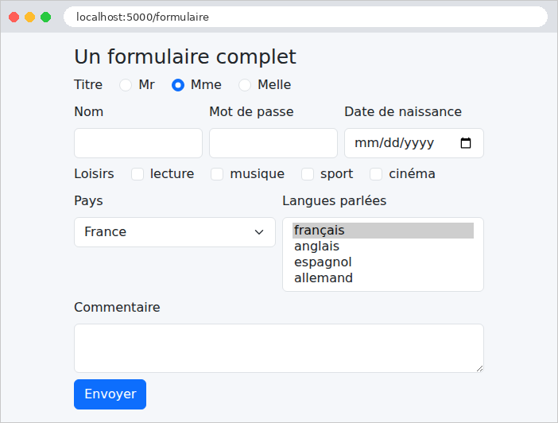
Les valeurs initiales passées au constructeur sont visibles : le bouton radio « Mme », le pays « France », la langue « français ». Le HTML produit par [WTForms] (extraits) :
| <input id="csrf_token" name="csrf_token" type="hidden" value="ImIzYzYwNGY2NDg4MmRmYTc3YmM4ZjhlOTk1Mjk3ZGY2NjdlNWZiYjAi.arfJuA.6ncWpBvOl7JITgGzTgeiKXLS5ZA">
<input id="jeton" name="jeton" type="hidden" value="A7X2">
...
<input checked class="form-check-input" id="titre-1" name="titre" type="radio" value="Mme">
<label class="form-check-label" for="titre-1">Mme</label>
...
<input class="form-control" id="naissance" name="naissance" type="date" value="">
...
<input class="form-check-input" id="loisirs-0" name="loisirs" type="checkbox" value="lecture">
<label class="form-check-label" for="loisirs-0">lecture</label>
...
<select class="form-select" id="pays" name="pays"><option selected value="fr">France</option><option value="be">Belgique</option>...</select>
...
<select class="form-select" id="langues" multiple name="langues" size="4"><option selected value="français">français</option>...</select>
...
<textarea class="form-control" id="commentaire" name="commentaire" rows="2">
</textarea>
|
[WTForms] a écrit les attributs [id] (le nom du champ, suivi du numéro de l'option pour les groupes), [name], [type], [value], ainsi que [checked] et [selected] pour les choix courants. Le jeton anti-CSRF est une chaîne signée. Remplissons le formulaire et envoyons-le :
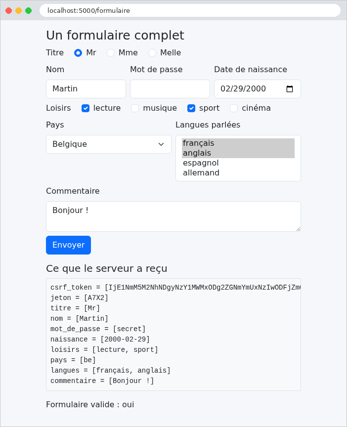
La page montre ce qu'a reçu le serveur : un paramètre par champ, avec plusieurs valeurs pour les cases à cocher et la liste multiple ; le mot de passe a été envoyé, mais n'est pas réaffiché dans son champ. Le champ caché [jeton] a été renvoyé tel quel : c'est le moyen de faire faire un aller-retour à une information que l'utilisateur ne voit pas (l'étude de cas s'en sert pour le numéro de version d'un enregistrement). Mais un champ caché n'est pas un champ protégé : l'utilisateur peut le modifier avec les outils de développement de son navigateur, et le serveur doit le vérifier comme tout autre champ.
Envoyons maintenant, avec [curl], un formulaire sans jeton, et un pays qui n'est pas dans la liste :
| curl -d "nom=Martin&pays=xx" http://localhost:5000/formulaire
|
| ...
<h2 class="h5 mt-3">Ce que le serveur a reçu</h2>
<pre class="bg-light p-2 border">nom = [Martin]
pays = [xx]</pre>
<p>Formulaire valide : non</p>
<ul>
<li>titre : Not a valid choice.</li>
<li>pays : Not a valid choice.</li>
<li>csrf_token : The CSRF token is missing.</li>
</ul>
...
|
Trois erreurs : le jeton manque ; le pays [xx] ne fait pas partie des choix ; aucun titre n'a été envoyé (un [RadioField] exige un choix). Les messages sont en anglais : l'exemple suivant les francise.
Un formulaire d'inscription, dont chaque champ a ses contraintes. En cas d'erreur, le formulaire est réaffiché avec la saisie de l'utilisateur et un message sous chaque champ erroné.
| # models/inscription.py : les champs du formulaire et leurs contraintes
from flask_wtf import FlaskForm
from wtforms import EmailField, IntegerField, PasswordField, StringField
from wtforms.validators import DataRequired, Email, EqualTo, InputRequired, Length, NumberRange
# un FILTRE : il transforme la valeur reçue AVANT la validation ;
# ici, les espaces qui entourent la saisie sont retirés
def nettoyer(valeur):
return valeur.strip() if isinstance(valeur, str) else valeur
class InscriptionForm(FlaskForm):
# la langue des messages que WTForms écrit lui-même (conversion impossible,
# par exemple : "abc" dans un champ entier)
class Meta:
locales = ["fr"]
# chaque champ : un libellé, des filtres, et une liste de validateurs, chacun
# avec son message d'erreur. DataRequired refuse une saisie vide (ou faite
# d'espaces) ; il produit aussi l'attribut HTML5 [required]
nom = StringField("Nom", filters=[nettoyer], validators=[
DataRequired("Le nom est obligatoire."),
Length(max=20, message="Le nom ne doit pas dépasser 20 caractères.")])
# EmailField : un champ <input type="email">
email = EmailField("Adresse électronique", filters=[nettoyer], validators=[
DataRequired("L'adresse électronique est obligatoire."),
Email("Adresse électronique invalide.")])
# tout ce qui vient d'un formulaire est une chaîne : IntegerField la convertit
# ("42" -> 42) ; InputRequired : la saisie ne doit pas être vide
age = IntegerField("Âge", validators=[
InputRequired("L'âge est obligatoire."),
NumberRange(min=18, max=120, message="L'âge doit être compris entre 18 et 120 ans.")])
mot_de_passe = PasswordField("Mot de passe", validators=[
DataRequired("Le mot de passe est obligatoire."),
Length(min=6, message="Le mot de passe doit comporter au moins 6 caractères.")])
# une règle qui porte sur DEUX champs : EqualTo compare ce champ à un autre
confirmation = PasswordField("Confirmation", validators=[
DataRequired("La confirmation est obligatoire."),
EqualTo("mot_de_passe", message="La confirmation ne correspond pas au mot de passe.")])
|
- lignes 9-10 : un filtre [WTForms] est une fonction qui transforme la valeur reçue, avant la validation. Celui-ci retire les espaces qui entourent une chaîne (une saisie [" "] devient vide, et sera refusée par [DataRequired]). Le test [isinstance] protège contre une valeur absente ([None]) ;
- lignes 17-18 : la classe interne [Meta] règle le comportement du formulaire. [locales = ["fr"]] : les messages que [WTForms] écrit lui-même (une conversion impossible, un choix invalide...) seront en français ; [WTForms] est livré avec leurs traductions. [app.py] désactive pour cela le mécanisme de traduction de [Flask-WTF] ([WTF_I18N_ENABLED = False]), qui attendrait sinon l'extension [Flask-Babel] ;
- lignes 23-25 : le paramètre [validators] est la liste des validateurs du champ, exécutés dans l'ordre. Chacun reçoit son message d'erreur. [DataRequired] refuse une valeur vide ; [Length] borne la longueur de la chaîne ;
- lignes 28-30 : [EmailField] produit un [<input type="email">] ; le validateur [Email] vérifie la syntaxe de l'adresse (avec la bibliothèque [email-validator], déjà utilisée par [Pydantic] à l'exemple 08) ;
- lignes 34-36 : [IntegerField] convertit la saisie en entier. [InputRequired] exige une saisie ; à la différence de [DataRequired], il vérifie que quelque chose a été tapé, et non que la valeur convertie est « vraie » : [DataRequired] refuserait l'âge 0, car [0] est faux en [Python]. [NumberRange] borne la valeur ;
- lignes 43-45 : une règle qui porte sur deux champs : [EqualTo("mot_de_passe")] compare la valeur du champ à celle d'un autre champ.
Les validateurs servent aussi à l'affichage : [WTForms] en déduit des attributs HTML5 ([required], [maxlength], [minlength], [min], [max]), qui permettent au navigateur de vérifier la saisie avant même l'envoi (nous le verrons plus loin). Un validateur « maison » est une fonction qui reçoit le formulaire et le champ, et lève une [ValidationError] (du module [wtforms.validators]) si la valeur ne convient pas ; on peut aussi l'écrire comme une méthode du formulaire, nommée [validate_<champ>]. [WTForms] fournit d'autres validateurs prêts à l'emploi : [Regexp] (une expression régulière), [AnyOf] (une liste de valeurs permises), [Optional]... L'étude de cas s'en sert.
4.7.2. Le contrôleur : controllers/inscription.py
| # controllers/inscription.py : un formulaire validé par le serveur
from flask import Blueprint, render_template, request
from models.inscription import InscriptionForm
inscription = Blueprint("inscription", __name__, url_prefix="/inscription")
# ?html5=true : on laisse le navigateur valider le formulaire avant l'envoi
def html5_demande() -> bool:
return request.args.get("html5") == "true"
@inscription.get("")
def afficher():
return render_template("inscription/inscription.html", form=InscriptionForm(),
html5=html5_demande())
@inscription.post("")
def inscrire():
form = InscriptionForm()
# validate_on_submit : la requête est un POST ET le formulaire est valide
if not form.validate_on_submit():
# on RÉAFFICHE le formulaire : valeurs saisies (sauf les mots de passe),
# et un message sous chaque champ erroné (cf. fragments/champ.html)
return render_template("inscription/inscription.html", form=form,
html5=html5_demande(),
erreur="Le formulaire contient des erreurs.")
return render_template("inscription/bienvenue.html", form=form)
|
- lignes 10-11 : le paramètre [?html5=true] active la validation par le navigateur (voir plus loin) ;
- ligne 24 : [validate_on_submit()] rend [True] si la requête est un POST et si le formulaire est valide ;
- lignes 27-29 : le formulaire invalide est réaffiché : c'est le même objet [form], qui contient la saisie de l'utilisateur et les erreurs de chaque champ. La variable [erreur] est un message général, affiché en bas de page par le gabarit ;
- ligne 30 : le formulaire valide : la page de bienvenue. (L'exemple suivant montrera qu'il vaut mieux, après un POST réussi, rediriger.)
4.7.3. Un champ réutilisable : templates/fragments/champ.html
Chaque champ s'affiche de la même façon : un libellé, la zone de saisie, et, en cas d'erreur, la zone encadrée de rouge et le message en dessous. Une macro évite de l'écrire cinq fois :
| {# un champ de saisie, avec son libellé et son PREMIER message d'erreur.
field.errors : la liste des messages d'erreur du champ ; les attributs HTML5
(required, maxlength, minlength, min, max) sont écrits par WTForms lui-même,
d'après les validateurs du champ #}
{% macro champ(field) %}
<div class="mb-2">
{{ field.label(class="form-label") }}
{{ field(class="form-control" ~ (" is-invalid" if field.errors else "")) }}
{% if field.errors %}
<div class="invalid-feedback">{{ field.errors[0] }}</div>
{% endif %}
</div>
{% endmacro %}
|
- ligne 5 : la macro reçoit un champ du formulaire ;
- ligne 8 : la classe [is-invalid] de [Bootstrap] encadre la zone en rouge. Elle est ajoutée si la liste des erreurs du champ, [field.errors], n'est pas vide ;
- lignes 9-11 : le premier message d'erreur du champ, dans un élément [invalid-feedback], que [Bootstrap] affiche en rouge sous une zone [is-invalid].
4.7.4. Les vues
| {% extends "layout.html" %}
{% from "fragments/champ.html" import champ %}
{% block contenu %}
<h1 class="h3">Inscription</h1>
{% if html5 %}
<p>Validation par le navigateur <b>activée</b> - <a href="/inscription">la désactiver</a></p>
{% else %}
<p>Validation par le navigateur <b>désactivée</b> - <a href="/inscription?html5=true">l'activer</a></p>
{% endif %}
{# novalidate : le navigateur ignore les attributs required, min... et
envoie le formulaire tel quel ; seul le serveur valide #}
<form method="post" action="{{ '/inscription?html5=true' if html5 else '/inscription' }}"
{{- '' if html5 else ' novalidate' }}>
{{ form.csrf_token }}
{{ champ(form.nom) }}
{{ champ(form.email) }}
{{ champ(form.age) }}
{{ champ(form.mot_de_passe) }}
{{ champ(form.confirmation) }}
<button class="btn btn-primary" type="submit">S'inscrire</button>
</form>
{% endblock %}
|
- lignes 13-14 : l'attribut [novalidate] désactive la validation par le navigateur : le formulaire est envoyé tel quel, et seul le serveur le valide. C'est ce que nous voulons observer d'abord. [{{-] supprime les blancs qui précèdent la balise, pour coller l'attribut à la balise [<form>] ;
- lignes 16-20 : un appel de la macro par champ.
| <!doctype html>
<html lang="fr">
<head>
<meta charset="utf-8">
<title>Inscription</title>
<link rel="stylesheet" href="{{ url_for('bootstrap.static', filename='css/bootstrap.min.css') }}">
<link rel="stylesheet" href="{{ url_for('static', filename='css/styles.css') }}">
</head>
<body>
<div class="container py-3" style="max-width: 36rem">
<main>
{% block contenu %}{% endblock %}
</main>
{# l'erreur globale, en bas de page, sur fond rose léger ; [erreur] est fournie par l'action #}
{% if erreur %}
<div class="zone-erreur" role="alert">{{ erreur }}</div>
{% endif %}
</div>
</body>
</html>
|
- lignes 15-17 : le message général, en bas de page, dans une zone dont le style est défini par [static/css/styles.css] (exemple 15). L'attribut [role="alert"] le signale aux lecteurs d'écran.
| {% extends "layout.html" %}
{% block contenu %}
{# form.nom.data : la valeur du champ, après filtres et conversion #}
<h1 class="h3">Bienvenue {{ form.nom.data }}</h1>
<p>Votre inscription est enregistrée : adresse <b>{{ form.email.data }}</b>,
âge <b>{{ form.age.data }}</b> ans.</p>
{% endblock %}
|
[form.nom.data] est la valeur du champ, après filtres et conversion : le nom débarrassé de ses espaces, l'âge sous forme d'entier.
4.7.5. Exécution
Envoyons un formulaire plein d'erreurs : un nom fait d'espaces, une adresse sans domaine complet, un âge de 12 ans, un mot de passe trop court, et une confirmation différente :
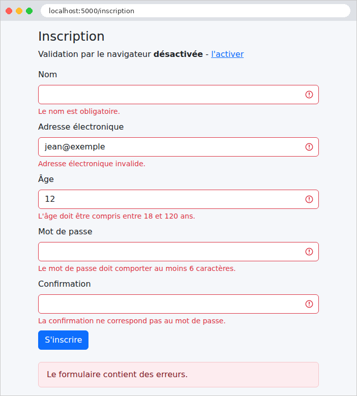
La saisie a été conservée (sauf les mots de passe), et chaque erreur est signalée sous son champ. Avec [curl], en fournissant cette fois le jeton anti-CSRF, on peut aussi envoyer ce qu'un navigateur n'enverrait pas, un âge non numérique : le message de conversion, écrit par [WTForms], est en français grâce à [locales] :
| <input class="form-control is-invalid" id="age" max="120" min="18" name="age" required type="number" value="abc">
<div class="invalid-feedback">N'est pas un entier valide.</div>
|
On voit aussi les attributs HTML5 déduits des validateurs : [required], [min], [max].
4.7.6. La validation par le navigateur
Supprimons l'attribut [novalidate], en suivant le lien « l'activer » (paramètre [?html5=true]). Le navigateur vérifie alors lui-même les attributs [required], [type="email"], [min], [maxlength]... avant d'envoyer le formulaire, et affiche ses propres messages :
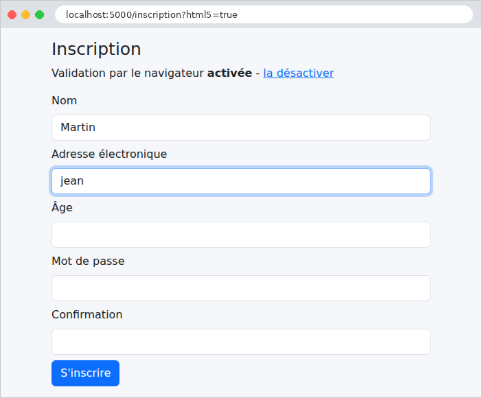
Cette validation est confortable pour l'utilisateur : immédiate, sans aller-retour avec le serveur. Mais elle ne remplace pas celle du serveur : un utilisateur peut la désactiver, et un programme comme [curl] l'ignore complètement. La règle est absolue : le serveur valide toujours, la validation par le navigateur n'est qu'un confort en plus.
Une saisie correcte, enfin. Le nom, saisi avec des espaces autour, a été nettoyé par le filtre :
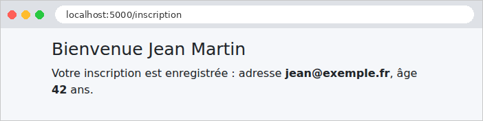
4.8. Exemple 20 : le schéma Post / Redirect / Get
Quand une action POST répond par une page, cette page est le résultat d'un POST. Si l'utilisateur la recharge (touche [F5]), le navigateur renvoie le POST, après un avertissement que peu de gens lisent : la commande est passée deux fois, le message publié deux fois. Le schéma Post / Redirect / Get (PRG) évite ce problème : une action POST qui a réussi ne rend pas de page ; elle répond par une redirection (exemple 04) vers une page GET, que le navigateur demande aussitôt. Recharger cette page ne fait que refaire le GET.
Il reste un problème : la page GET voudrait afficher un message (« la tâche a été ajoutée »), mais c'est l'action POST qui le connaît, et elle ne peut pas transmettre de variable à une requête qui n'a pas encore eu lieu. La solution : le message flash, déposé par l'action POST, conservé jusqu'à la requête suivante, affiché, puis oublié.
4.8.1. Le service : services/taches.py
| # services/taches.py : la liste des tâches, en mémoire, partagée par tous
from threading import Lock
from flask import current_app
class TachesService:
def __init__(self):
self._taches = ["Lire le chapitre 3"]
# plusieurs requêtes peuvent s'exécuter EN MÊME TEMPS (le serveur les
# traite sur plusieurs threads) : un verrou (Lock) garantit qu'un seul
# thread à la fois lit ou modifie la liste
self._verrou = Lock()
def liste(self) -> list[str]:
with self._verrou:
return list(self._taches) # une COPIE : l'appelant ne peut pas modifier la nôtre
def ajouter(self, libelle: str):
with self._verrou:
self._taches.append(libelle)
def taches_service() -> TachesService:
return current_app.extensions["taches"]
|
- ligne 14 : la liste des tâches est partagée par toutes les requêtes. Or le serveur de développement traite chaque requête sur un thread différent : deux requêtes peuvent s'exécuter en même temps, et modifier la liste simultanément. Un verrou ([Lock], du module standard [threading]) garantit qu'un seul thread à la fois exécute le code qu'il protège. Le préfixe [_] signale, par convention, un attribut interne à la classe ;
- ligne 17 : l'instruction [with] prend le verrou, exécute le bloc, puis rend le verrou, même si le bloc lève une exception. Un thread qui trouve le verrou pris attend qu'il soit rendu ;
- ligne 18 : la méthode rend une copie de la liste : l'appelant peut la parcourir tranquillement pendant qu'un autre thread ajoute une tâche à l'original.
4.8.2. Le contrôleur : controllers/taches.py
| # controllers/taches.py : le schéma Post / Redirect / Get
from flask import Blueprint, flash, redirect, render_template, request, url_for
from services.taches import taches_service
taches = Blueprint("taches", __name__, url_prefix="/taches")
# GET /taches : la liste et le formulaire d'ajout
@taches.get("")
def afficher():
return render_template("taches/taches.html", taches=taches_service().liste())
# POST /taches : le schéma Post / Redirect / Get
@taches.post("")
def ajouter():
libelle = request.form.get("libelle", "")
texte = libelle.strip()
if not texte or len(texte) > 40:
# saisie invalide : on réaffiche la page, sans redirection
return render_template("taches/taches.html", taches=taches_service().liste(),
libelle=libelle,
erreur="Le libellé doit comporter de 1 à 40 caractères.")
taches_service().ajouter(texte)
# un message "flash" : il survivra à la redirection, pour la requête SUIVANTE
flash(f"La tâche [{texte}] a été ajoutée.")
# pas de page : une redirection vers la page GET
return redirect(url_for("taches.afficher"))
# POST /taches/sans-prg : le contre-exemple (une page en réponse au POST)
@taches.post("/sans-prg")
def ajouter_sans_prg():
libelle = request.form.get("libelle", "").strip()
taches_service().ajouter(libelle or "(sans titre)")
return render_template("taches/taches.html", taches=taches_service().liste(),
sans_prg=True)
|
- lignes 18-24 : la saisie est validée à la main, sans [WTForms], pour ne pas encombrer l'exemple. Une saisie invalide est réaffichée, sans redirection : il n'y a rien à protéger d'un double envoi, puisque rien n'a été modifié ;
- ligne 27 : [flash] dépose un message pour la requête suivante ;
- ligne 29 : la redirection vers la page GET ;
- lignes 34-38 : le contre-exemple : une page en réponse au POST.
4.8.3. Les vues
| <!doctype html>
<html lang="fr">
<head>
<meta charset="utf-8">
<title>Tâches</title>
<link rel="stylesheet" href="{{ url_for('bootstrap.static', filename='css/bootstrap.min.css') }}">
<link rel="stylesheet" href="{{ url_for('static', filename='css/styles.css') }}">
</head>
<body>
<div class="container py-3" style="max-width: 36rem">
{# les messages flash, en haut de page : déposés AVANT la redirection ;
get_flashed_messages les rend, puis les oublie #}
{% for message in get_flashed_messages() %}
<div class="alert alert-success" role="status">{{ message }}</div>
{% endfor %}
<main>
{% block contenu %}{% endblock %}
</main>
{% if erreur %}
<div class="zone-erreur" role="alert">{{ erreur }}</div>
{% endif %}
</div>
</body>
</html>
|
- lignes 13-15 : la fonction [get_flashed_messages()], disponible dans toutes les vues, rend la liste des messages flash en attente, puis les oublie : ils ne seront affichés qu'une fois. La classe [alert alert-success] de [Bootstrap] les affiche dans un cadre vert.
| {% extends "layout.html" %}
{% block contenu %}
<h1 class="h3">Mes tâches</h1>
<ol>
{% for tache in taches %}
<li>{{ tache }}</li>
{% endfor %}
</ol>
<form method="post" action="/taches" class="d-flex gap-2">
<input class="form-control" name="libelle" value="{{ libelle }}" placeholder="Nouvelle tâche">
<button class="btn btn-primary text-nowrap" type="submit">Ajouter</button>
{# formaction : ce bouton envoie le MÊME formulaire à une autre adresse #}
<button class="btn btn-outline-secondary text-nowrap" type="submit" formaction="/taches/sans-prg">Ajouter sans PRG</button>
</form>
{% if sans_prg %}
<p class="text-danger mt-2">Page affichée en réponse à un POST : appuyez sur F5 et la tâche sera ajoutée une seconde fois.</p>
{% endif %}
{% endblock %}
|
- ligne 14 : l'attribut [formaction] d'un bouton envoie le formulaire à une autre adresse que celle de son attribut [action] : un même formulaire peut ainsi déclencher deux actions différentes.
4.8.4. Où sont conservés les messages flash ?
Entre la requête POST et la requête GET qui suit, le message doit être conservé quelque part. [Flask] le range dans la session de l'utilisateur (chapitre sur les portées). Par défaut, la session de [Flask] n'est pas conservée sur le serveur : elle est stockée dans un cookie, envoyé au navigateur, qui le renvoie à chaque requête. Pour que l'utilisateur ne puisse pas la falsifier, le cookie est signé avec la clé secrète : c'est pourquoi [app.py] la définit. Observons-le avec [curl]. L'option [-c] enregistre les cookies reçus dans un fichier, l'option [-b] renvoie ceux du fichier :
| curl -i -c cookies.txt -d "libelle=Faire%20les%20exercices" http://localhost:5000/taches
|
| HTTP/1.1 302 FOUND
Content-Type: text/html; charset=utf-8
Content-Length: 201
Location: /taches
Set-Cookie: session=.eJyrVopPy0kszkgtVrKKrlZSKAFSSrmpxcWJ6alKOko-iQolMaUGBqlGyRmpCtFuiZlFqQo5qcUKqRWpRcmZyanFsQqJCmAVlhCFlgqJWfmlUHaqnlJsbWwtAJ5zIV4.arfJyw.XBeb5pAbuGT1H1-IhwuRM6NVuro; HttpOnly; Path=/
...
|
La réponse au POST est une redirection (code 302, entête [Location]), accompagnée d'un cookie [session]. Sa valeur a trois parties, séparées par des points : les données, compressées et encodées en base 64 ; la date de signature ; la signature. Décodées, les données sont lisibles :
| {"_flashes":[{" t":["message","La tâche [Faire les exercices] a été ajoutée."]}]}
|
La session d'une application [Flask] est donc lisible par l'utilisateur (elle n'est pas chiffrée), mais infalsifiable (elle est signée) : on n'y range rien de secret. L'attribut [HttpOnly] interdit au [JavaScript] de la page de lire le cookie. Suivons la redirection, en renvoyant le cookie :
| curl -i -b cookies.txt -c cookies.txt http://localhost:5000/taches
|
| HTTP/1.1 200 OK
Content-Type: text/html; charset=utf-8
Content-Length: 916
Set-Cookie: session=; Expires=Thu, 01 Jan 1970 00:00:00 GMT; Max-Age=0; HttpOnly; Path=/
...
<div class="alert alert-success" role="status">La tâche [Faire les exercices] a été ajoutée.</div>
<main>
<h1 class="h3">Mes tâches</h1>
<ol>
<li>Lire le chapitre 3</li>
<li>Faire les exercices</li>
</ol>
...
|
Le message est affiché, et la session, désormais vide, est supprimée : le serveur renvoie un cookie vide, dont la date d'expiration est passée. Une nouvelle requête GET n'afficherait plus le message.
4.8.5. Exécution
Ajout d'une tâche : le navigateur a suivi la redirection ; l'URL est celle de la page GET, que l'on peut recharger sans risque.
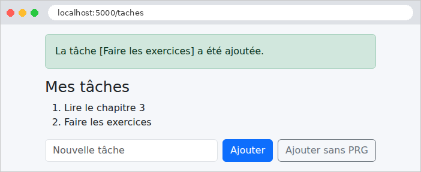
Une saisie invalide, réaffichée avec son message d'erreur :
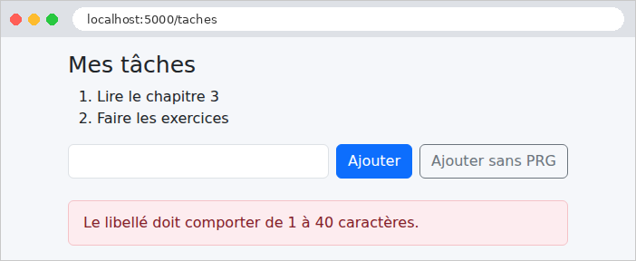
Le contre-exemple : la page est la réponse au POST, et son URL est [/taches/sans-prg]. Si l'on appuie sur [F5], le navigateur demande s'il faut renvoyer le formulaire ; si l'on accepte, la tâche est ajoutée une seconde fois.
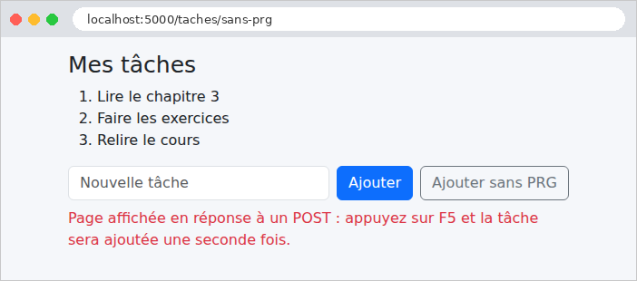
4.9. Exemple 21 : liens, boutons et confirmation
Un principe du protocole HTTP : une requête GET ne modifie rien. Les navigateurs, les moteurs de recherche, les outils qui préchargent les pages suivent librement les liens, sans demander l'avis de l'utilisateur. Un lien « supprimer » ([<a href="/contacts/2/supprimer">]) serait donc dangereux : un robot qui parcourt le site supprimerait tout. Dans une application web :
- consulter se fait par un lien ([<a href>]), qui émet une requête GET ;
- modifier (enregistrer, dupliquer, supprimer) se fait par un bouton placé dans un formulaire POST, protégé par un jeton anti-CSRF.
Cet exemple gère une liste de contacts, et ajoute une fenêtre de confirmation avant chaque suppression.
| # services/contacts.py : les contacts, en mémoire, partagés par tous
from dataclasses import dataclass, replace
from threading import Lock
from flask import current_app
# un contact : un identifiant, un nom, un numéro de téléphone
@dataclass(frozen=True)
class Contact:
id: int
nom: str
telephone: str
class ContactsService:
def __init__(self):
self._contacts = [
Contact(1, "Marie Durand", "01 23 45 67 89"),
Contact(2, "Paul Martin", "06 12 34 56 78"),
Contact(3, "Philippe Jandot", "02 98 76 54 32"),
]
self._dernier_id = 3
self._verrou = Lock()
def liste(self) -> list[Contact]:
with self._verrou:
return list(self._contacts)
# le contact, ou None s'il n'existe pas
def lire(self, id: int) -> Contact | None:
with self._verrou:
return next((c for c in self._contacts if c.id == id), None)
def modifier(self, id: int, nom: str, telephone: str) -> Contact | None:
with self._verrou:
for i, contact in enumerate(self._contacts):
if contact.id == id:
# un contact est immuable (frozen) : replace en fabrique un
# nouveau, qui remplace l'ancien dans la liste
self._contacts[i] = replace(contact, nom=nom, telephone=telephone)
return self._contacts[i]
return None
def ajouter(self, nom: str, telephone: str) -> Contact:
with self._verrou:
self._dernier_id += 1
contact = Contact(self._dernier_id, nom, telephone)
self._contacts.append(contact)
return contact
def supprimer(self, id: int) -> Contact | None:
with self._verrou:
contact = next((c for c in self._contacts if c.id == id), None)
if contact is not None:
self._contacts.remove(contact)
return contact
def contacts_service() -> ContactsService:
return current_app.extensions["contacts"]
|
Un service en mémoire, protégé par un verrou comme celui de l'exemple 20. Quelques points de [Python] :
- ligne 34 : l'expression entre parenthèses est un générateur (cf. exemple 05) des contacts dont l'id est celui cherché ; [next] en rend le premier élément, ou la valeur par défaut [None] s'il n'y en a pas ;
- ligne 38 : [enumerate] parcourt une liste en fournissant, pour chaque élément, son indice et l'élément ;
- ligne 42 : un contact est immuable ([frozen=True]) ; la fonction [replace] du module [dataclasses] en fabrique une copie, dont certains attributs sont changés ;
- les méthodes rendent [None] pour un contact inexistant : c'est au contrôleur de décider de la réponse.
| # controllers/contacts.py : liens (GET) et boutons (POST)
from flask import Blueprint, abort, flash, redirect, render_template, request, url_for
from services.contacts import contacts_service
contacts = Blueprint("contacts", __name__, url_prefix="/contacts")
# le contact, ou une réponse 404 s'il n'existe pas
def contact_ou_404(contact):
if contact is None:
abort(404, "contact inconnu")
return contact
# un LIEN (<a href>) : une requête GET, qui ne modifie rien
@contacts.get("")
def liste():
return render_template("contacts/liste.html", contacts=contacts_service().liste())
@contacts.get("/<int:id>")
def fiche(id):
contact = contact_ou_404(contacts_service().lire(id))
return render_template("contacts/fiche.html", contact=contact)
# un BOUTON dans un formulaire POST : une requête qui modifie des données
@contacts.post("/<int:id>")
def enregistrer(id):
contact = contact_ou_404(contacts_service().modifier(
id, request.form.get("nom", ""), request.form.get("telephone", "")))
flash(f"Le contact [{contact.nom}] a été modifié.")
return redirect(url_for("contacts.liste"))
# même formulaire, autre bouton (attribut formaction) : autre action
@contacts.post("/<int:id>/dupliquer")
def dupliquer(id):
copie = contacts_service().ajouter(request.form.get("nom", "") + " (copie)",
request.form.get("telephone", ""))
flash(f"Le contact [{copie.nom}] a été créé.")
return redirect(url_for("contacts.liste"))
@contacts.post("/<int:id>/supprimer")
def supprimer(id):
contact = contact_ou_404(contacts_service().supprimer(id))
flash(f"Le contact [{contact.nom}] a été supprimé.")
return redirect(url_for("contacts.liste"))
|
- lignes 10-13 : une fonction utilitaire : un contact inexistant arrête l'action par une réponse 404 ;
- lignes 17-23 : les deux actions GET, qui ne modifient rien : la liste, et la fiche d'un contact ;
- lignes 29-34 : l'enregistrement de la fiche : une action POST, qui suit le schéma PRG. La même URL [/contacts/2] est traitée par deux actions différentes, selon la méthode : GET affiche, POST enregistre ;
- lignes 38-43 : la duplication : une autre action POST, déclenchée par un second bouton du même formulaire ;
- lignes 46-50 : la suppression.
4.9.3. La protection anti-CSRF : app.py
| # app.py : l'application de l'exemple 21
from pathlib import Path
from flask import Blueprint, Flask
from flask_wtf.csrf import CSRFProtect
from controllers.contacts import contacts
from services.contacts import ContactsService
# Bootstrap, partagé par les exemples (cf. exemple 15)
BOOTSTRAP = Path(__file__).resolve().parent.parent / "commun" / "bootstrap"
def create_app():
app = Flask(__name__)
app.jinja_env.trim_blocks = True
app.jinja_env.lstrip_blocks = True
app.config["SECRET_KEY"] = "une-cle-secrete-pour-l-exemple-21"
app.extensions["contacts"] = ContactsService()
app.register_blueprint(Blueprint("bootstrap", __name__, static_folder=BOOTSTRAP,
static_url_path="/bootstrap"))
app.register_blueprint(contacts)
# la protection anti-CSRF de Flask-WTF, pour TOUTES les requêtes POST de
# l'application : chaque formulaire doit renvoyer le jeton csrf_token()
CSRFProtect(app)
return app
if __name__ == "__main__":
create_app().run(port=5000, debug=True)
|
- ligne 26 : dans les exemples 18 et 19, c'était le formulaire [WTForms] qui vérifiait son jeton, dans [validate()]. Ici, les formulaires sont écrits à la main, sans [WTForms]. [CSRFProtect] étend la protection à toute l'application : avant chaque requête POST (mais aussi PUT, PATCH, DELETE), il vérifie le jeton, et répond 400 s'il est absent ou faux, avant même que l'action soit appelée. Une action ne peut pas l'oublier. C'est la configuration que retiendra l'étude de cas.
4.9.4. Les vues
| {% extends "layout.html" %}
{% block contenu %}
<h1 class="h3">Contacts</h1>
<table class="table align-middle">
<tbody>
{% for contact in contacts %}
<tr>
<td>{{ contact.nom }}</td>
<td>{{ contact.telephone }}</td>
<td class="text-end">
{# consulter : un simple lien ; url_for place l'id dans le chemin : /contacts/2 #}
<a class="btn btn-sm btn-outline-primary" href="{{ url_for('contacts.fiche', id=contact.id) }}">Voir</a>
{# supprimer : un formulaire POST, dont l'envoi sera confirmé #}
<form method="post" class="d-inline" action="{{ url_for('contacts.supprimer', id=contact.id) }}"
data-confirmation="Supprimer le contact {{ contact.nom }} ?">
{# le jeton anti-CSRF, exigé par CSRFProtect (cf. app.py) #}
<input type="hidden" name="csrf_token" value="{{ csrf_token() }}">
<button class="btn btn-sm btn-outline-danger" type="submit">Supprimer</button>
</form>
</td>
</tr>
{% endfor %}
</tbody>
</table>
{% endblock %}
|
- ligne 13 : un lien, présenté comme un bouton par les classes de [Bootstrap] ([btn]...) : l'apparence n'a rien à voir avec la méthode HTTP. [url_for('contacts.fiche', id=contact.id)] place l'id dans le chemin : [/contacts/2] ;
- lignes 15-20 : un formulaire POST pour chaque bouton « Supprimer », sans autre champ que le jeton. La classe [d-inline] l'affiche sur la même ligne que le lien. L'attribut [data-confirmation] porte le message de confirmation : les attributs [data-...] sont libres, destinés au [JavaScript] de la page ;
- ligne 18 : la fonction [csrf_token()], fournie aux vues par [Flask-WTF], rend le jeton anti-CSRF de la session ; on le place dans un champ caché nommé [csrf_token].
| {% extends "layout.html" %}
{% block contenu %}
<h1 class="h3">Contact n° {{ contact.id }}</h1>
<form method="post" action="{{ url_for('contacts.enregistrer', id=contact.id) }}">
<input type="hidden" name="csrf_token" value="{{ csrf_token() }}">
<div class="mb-2">
<label class="form-label" for="nom">Nom</label>
<input class="form-control" id="nom" name="nom" value="{{ contact.nom }}">
</div>
<div class="mb-3">
<label class="form-label" for="telephone">Téléphone</label>
<input class="form-control" id="telephone" name="telephone" value="{{ contact.telephone }}">
</div>
{# deux boutons d'envoi pour un même formulaire #}
<button class="btn btn-primary" type="submit">Enregistrer</button>
<button class="btn btn-outline-primary" type="submit"
formaction="{{ url_for('contacts.dupliquer', id=contact.id) }}">Dupliquer</button>
<a class="btn btn-link" href="{{ url_for('contacts.liste') }}">Retour à la liste</a>
</form>
{% endblock %}
|
- lignes 16-18 : deux boutons d'envoi pour un même formulaire : « Enregistrer » envoie le formulaire à l'adresse de son attribut [action], « Dupliquer » à celle de son attribut [formaction] (exemple 20) ;
- ligne 19 : le retour à la liste : un lien.
4.9.5. La fenêtre de confirmation
Le navigateur sait afficher une boîte de confirmation (fonction [JavaScript] [confirm]), mais elle est peu esthétique, et son apparence dépend du navigateur. On utilise ici une fenêtre modale de [Bootstrap], affichée par quelques lignes de [JavaScript]. La fenêtre est un fragment, inclus dans le gabarit, et donc présent, caché, dans toutes les pages :
| {# une seule fenêtre pour toute la page, cachée (d-none) au départ #}
<div id="modale-confirmation" class="d-none">
<div class="modal-backdrop fade show"></div>
<div class="modal fade show d-block" tabindex="-1" role="alertdialog" aria-modal="true">
<div class="modal-dialog modal-dialog-centered">
<div class="modal-content">
<div class="modal-header">
<h5 class="modal-title">Confirmation</h5>
</div>
<div class="modal-body">
<p class="mb-0" id="modale-confirmation-message"></p>
</div>
<div class="modal-footer">
<button type="button" class="btn btn-secondary" data-action="non">Non, revenir</button>
<button type="button" class="btn btn-danger" data-action="oui">Oui, confirmer</button>
</div>
</div>
</div>
</div>
</div>
|
- ligne 2 : la classe [d-none] de [Bootstrap] cache l'élément ;
- lignes 3-4 : le fond grisé, puis la fenêtre, dessinés par les classes de [Bootstrap] ;
- ligne 11 : l'emplacement du message ;
- lignes 14-15 : les deux boutons, de type [button] (et non [submit] : ils n'envoient aucun formulaire), distingués par leur attribut [data-action].
| <!doctype html>
<html lang="fr">
<head>
<meta charset="utf-8">
<title>Contacts</title>
<link rel="stylesheet" href="{{ url_for('bootstrap.static', filename='css/bootstrap.min.css') }}">
<link rel="stylesheet" href="{{ url_for('static', filename='css/styles.css') }}">
</head>
<body>
<div class="container py-3" style="max-width: 40rem">
{% for message in get_flashed_messages() %}
<div class="alert alert-success" role="status">{{ message }}</div>
{% endfor %}
<main>
{% block contenu %}{% endblock %}
</main>
</div>
{# la fenêtre de confirmation, présente dans toutes les pages #}
{% include "fragments/confirmation.html" %}
{# le script, en fin de page : les éléments qu'il cherche existent déjà #}
<script src="{{ url_for('static', filename='js/app.js') }}"></script>
</body>
</html>
|
- ligne 19 : la fenêtre, incluse dans toutes les pages ;
- ligne 21 : le script, placé en fin de page : quand il s'exécute, les éléments qu'il cherche existent déjà.
Le script [static/js/app.js] :
| // confirmation des formulaires portant l'attribut data-confirmation="..."
// Sans JavaScript, ces formulaires partent simplement sans confirmation.
(() => {
const modale = document.getElementById('modale-confirmation');
const message = document.getElementById('modale-confirmation-message');
let enAttente = null; // le formulaire à envoyer si l'on confirme
// 1. on intercepte l'envoi des formulaires à confirmer
document.querySelectorAll('form[data-confirmation]').forEach((formulaire) => {
formulaire.addEventListener('submit', (evenement) => {
evenement.preventDefault(); // l'envoi est suspendu
enAttente = formulaire;
message.textContent = formulaire.dataset.confirmation;
modale.classList.remove('d-none'); // la fenêtre apparaît
});
});
// 2. les deux boutons de la fenêtre
modale.addEventListener('click', (evenement) => {
const action = evenement.target.dataset.action;
if (action === 'oui') {
enAttente.submit(); // envoi, SANS redéclencher l'événement 'submit'
} else if (action === 'non') {
modale.classList.add('d-none');
enAttente = null;
}
});
})();
|
- ligne 3 : le code est enfermé dans une fonction anonyme, exécutée aussitôt : ses variables ne se mélangent pas à celles des autres scripts de la page ;
- lignes 4-6 : la fenêtre, l'emplacement du message, et le formulaire en attente de confirmation ;
- lignes 9-14 : pour chaque formulaire qui porte un attribut [data-confirmation], on intercepte l'événement [submit], déclenché par son envoi. [preventDefault()] suspend l'envoi ; le formulaire est mis en attente, son message ([dataset.confirmation], la valeur de l'attribut [data-confirmation]) est placé dans la fenêtre, qui apparaît ;
- lignes 19-25 : un seul gestionnaire pour les clics dans la fenêtre : [evenement.target] est l'élément cliqué ; son attribut [data-action] dit de quel bouton il s'agit. « Oui » envoie le formulaire en attente, par la méthode [submit()], qui, contrairement au clic sur un bouton, ne déclenche pas l'événement [submit] (sinon, la fenêtre réapparaîtrait) ; « Non » cache la fenêtre.
Sans [JavaScript], le formulaire est simplement envoyé sans confirmation : la page reste utilisable. C'est l'amélioration progressive : le [JavaScript] ajoute un confort, mais l'application ne dépend pas de lui.
4.9.6. Exécution
La liste des contacts :

Un clic sur « Supprimer » affiche la fenêtre de confirmation :

Après confirmation, le POST, la redirection, et le message flash :
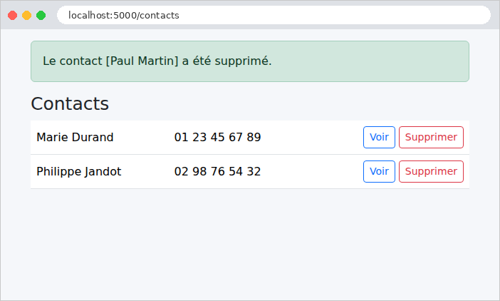
La fiche d'un contact, avec ses deux boutons d'envoi :

Une requête POST sans jeton anti-CSRF est refusée par [CSRFProtect], et un contact inexistant donne une erreur 404 :
| curl -i -X POST http://localhost:5000/contacts/2/supprimer
curl -i http://localhost:5000/contacts/9
|
| HTTP/1.1 400 BAD REQUEST
Content-Type: text/html; charset=utf-8
Content-Length: 117
<!doctype html>
<html lang=en>
<title>400 Bad Request</title>
<h1>Bad Request</h1>
<p>The CSRF token is missing.</p>
HTTP/1.1 404 NOT FOUND
Content-Type: text/html; charset=utf-8
Content-Length: 102
<!doctype html>
<html lang=en>
<title>404 Not Found</title>
<h1>Not Found</h1>
<p>contact inconnu</p>
|
Les pages d'erreur sont encore celles, en anglais, de [Werkzeug]. Le chapitre sur le cycle de vie d'une requête montrera comment les remplacer par des pages « maison ».